Halvorsen ResourcesLIMITED
ASX:HVR FRA:3HV
Halvorsen Resources Limited ACN 139 482 617 | Level 3, 16 Ord Street, West Perth WA 6005 | E: info@halvorsenresources.com.au W: halvorsenresources.com.au
ASX ANNOUNCEMENT
27 May 2026
Chilombo Resource Grows as Gold Inventory More Than Doubles
HIGHLIGHTS:
- Accelerated Growth: Updated Indicated & Inferred MRE delivers +19% tonnage (170 Mt at 0.47% Cu, 0.54% CuEq), including 126% increase in gold; 16% increase in copper.
- Tier-1 Grade: Chilombo copper grades compare directly with world-class operating mines in the Zambian Copperbelt, further enhanced by a 0.54% CuEq poly-metallic grade.
- New Satellite and By-Product Boost: Includes a shallow maiden copper MRE for West Kasakula and an updated Lwele Central MRE that incorporates the results of the recent gold re-assaying programme.
- High Confidence: Approximately 36% of the flagship Lwele Central MRE sits in the Indicated category, providing a robust foundation for near-term development studies.
- Phase 3 Underway: Diamond drilling aimed at further MRE growth has commenced, with an initial focus on the southern, shallower end of the flagship Lwele Central deposit.
- Key Regional Targets: Aircore and RC drill testing of large-scale regional targets at Kalwanyembe, Sokoshi, Mbalango, West Kasakula and Kafwila has also commenced.
Halvorsen Resources Limited (ASX:HVR) (Halvorsen) is pleased to announce an updated Mineral Resource Estimate (MRE) for its Chilombo Copper Project (Chilombo) in north-western Zambia. The MRE totals 170.2 million tonnes (Mt) at an average grade of 0.47% Cu (0.54% CuEq**) across the Lwele Central, Sampamba and West Kasakula deposits (0.2% Cu cut-off).
| Deposit | Tonnes
(millions)* | Copper
(Cu%)* | Cobalt
(Co%)* | Au
(g/t)* | Tonnes
Contained Cu* | Tonnes
Contained Co* | Ounces
Contained Au* | Copper
(CuEq%)** |
|---|
| Lwele Central | 128.8 | 0.48 | 0.02 | 0.06 | 615,300 | 26,800 | 242,000 | 0.57 |
| Sampamba | 18.8 | 0.51 | - | - | 96,800 | - | - | 0.51 |
| West Kasakula | 22.6 | 0.41 | 0.01 | 0.02 | 93,100 | 1,800 | 17,400 | 0.45 |
| TOTAL | 170.2 | 0.47 | 0.02 | 0.05 | 805,300 | 28,600 | 259,400 | 0.54 |
* Rounding has been applied
| Deposit | Resource
Classification | Tonnes
(millions)* | Copper
(Cu%)* | Cobalt
(Co%)* | Au
(g/t)* | Tonnes
Contained Cu* | Tonnes
Contained Co* | Ounces
Contained Au* | Copper
(CuEq%)** |
|---|
| Lwele Central | Indicated | 46.1 | 0.51 | 0.02 | 0.06 | 233,300 | 11,100 | 90,400 | 0.60 |
| Inferred | 82.7 | 0.46 | 0.02 | 0.06 | 382,100 | 15,700 | 151,600 | 0.55 |
| Sampamba | Indicated | 14.2 | 0.52 | - | - | 74,400 | - | - | 0.52 |
| Inferred | 4.6 | 0.49 | - | - | 22,400 | - | - | 0.49 |
| West Kasakula | Inferred | 22.6 | 0.41 | 0.01 | 0.02 | 93,100 | 1,800 | 17,400 | 0.45 |
| TOTAL | 170.2 | 0.47 | 0.02 | 0.05 | 805,300 | 28,600 | 259,400 | 0.54 |
* Rounding has been applied
** For CuEq grade calculation methodology, refer to Appendix 2 of this release
Key changes from the February 2026 MRE include:
- An updated Indicated and Inferred MRE for the Lwele Central deposit (copper, cobalt and gold Mineral Resources); and
- A maiden Inferred MRE for the shallow, tabular West Kasakula deposit (holding 93kt contained copper), located approximately 11km north-northeast of Lwele Central.
Both deposits, together with the Sampamba deposit (MRE unchanged), remain open along strike and down-dip.
Halvorsen’s Managing Director and CEO, Daniel Whitcombe, said:
“Chilombo keeps demonstrating just how large this system could be. Total copper content now exceeds 800kt, with ~259,000 contained gold ounces, and each of our three defined deposits still has plenty of room to grow. Put that alongside the regional targets we are drilling this year and you start to see the size of the opportunity in front of us, which is why I am so enthusiastic about Chilombo.
“The re-assaying programme has delivered a substantial lift in gold at Lwele Central, and gold will now be a routine part of our assay suite. We have said for some time that the by-product credits from both gold and cobalt at Chilombo are meaningful, and they give us a genuine lever to push forecast operating costs lower on the global cost curve. We expect to firm up the scale of that opportunity over the next six to twelve months.
“We are also very pleased that Phase 3 drilling for 2026 is now under way. The first priority is to extend Lwele Central in shallower, up-dip positions to the south. From there we will test the wider ‘Lwele Hub’ potential, including Lwele West and a key conductor northeast of the Lwele South prospect, and carry out scout drilling on our most promising regional targets. These include the large Mbalango and Sokoshi EM conductors, each extending for more than 1.8km of strike, with a scale, shape and conductivity similar to the Lwele Central signature.”
Updated Chilombo Indicated & Inferred MRE (May 2026)
The May 2026 MRE has been estimated in accordance with the guidelines of the JORC (2012) Code and is summarised in JORC Table 1 (Section 3), which accompanies this release.
The MRE was completed by Mr Michael Treloar (FAusIMM (CPGeo)), an independent expert and Competent Person as defined in the JORC (2012) Code, who is a full-time consultant with Treloar Resource Geology (Perth, WA).
Table 1: Chilombo Copper Project Mineral Resource at 0.2% Cu cut-off grade
| Deposit | Resource
Classification | Tonnes
(millions)* | Copper
(Cu%)* | Cobalt
(Co%)* | Au
(g/t)* | Tonnes
Contained Cu* | Tonnes
Contained Co* | Ounces
Contained Au* | Copper
(CuEq%)** |
|---|
| Lwele Central | Indicated | 46.1 | 0.51 | 0.02 | 0.06 | 233,300 | 11,100 | 90,400 | 0.60 |
| Inferred | 82.7 | 0.46 | 0.02 | 0.06 | 382,100 | 15,700 | 151,600 | 0.55 |
| Sampamba | Indicated | 14.2 | 0.52 | - | - | 74,400 | - | - | 0.52 |
| Inferred | 4.6 | 0.49 | - | - | 22,400 | - | - | 0.49 |
| West Kasakula | Inferred | 22.6 | 0.41 | 0.01 | 0.02 | 93,100 | 1,800 | 17,400 | 0.45 |
| TOTAL | 170.2 | 0.47 | 0.02 | 0.05 | 805,300 | 28,600 | 259,400 | 0.54 |
* Rounding has been applied
** For CuEq grade calculation methodology, refer to Appendix 2 of this release
Gold Potential
A programme of geological re-logging of Lwele Central drill core was completed on site during Q1 2026, after which more than 2,450 existing copper drill hole intersections were re-assayed for gold. This has lifted total gold resources by 126% to 259,400 oz from the previous estimate.1
Following the success of the re-assaying programme, Halvorsen will now routinely assay for gold in all drill intersections of defined copper mineralisation, for all deposits drilled during the current Phase 3 programmes.
Grade-Tonnage Analysis
Grade-tonnage curve analysis of the updated Lwele Central and maiden West Kasakula copper MREs demonstrates robust grade continuity, with tonnes decreasing and copper grade increasing as the cut-off rises, although continuity becomes less consistent as higher-grade cut-offs are applied.
Figure 1 shows the global Resource grade-tonnage relationship for the updated Lwele Central MRE and Figure 2 shows the global Resource grade-tonnage relationship for the maiden West Kasakula MRE.
Illustrative figure – fictional data
Figure 1: Grade-tonnage relationship of the updated Lwele Central MRE
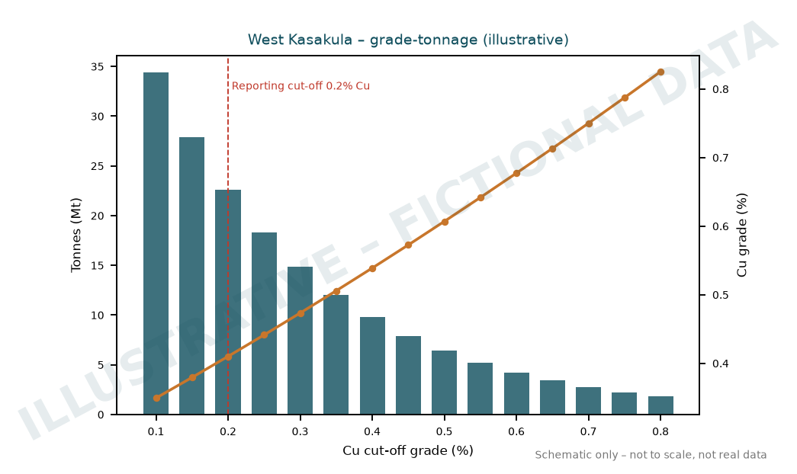
Illustrative figure – fictional data
Figure 2: Grade-tonnage relationship of the maiden West Kasakula MRE
Summary of Material Information Used to Estimate the Mineral Resources
The following is a summary of the material information used to estimate the Mineral Resources, as required by Listing Rule 5.8.1 and the JORC (2012) Code Reporting Guidelines.
Mineral Tenement and Land Tenure Status
The Chilombo Copper Project is located in north-western Zambia, approximately 70km north-northwest of the town of Kasempa, in Kasempa District, North-Western Province.
The mineral tenements comprise two active Large Scale Mining Licences, 41872-HQ-LML (Chilombo North) and 41893-HQ-LML (Chilombo South), totalling approximately 329km2. Both were granted for 25 years by the MLC (Mining Licensing Committee), part of the Ministry of Mines and Minerals Development (MMD) in Zambia, on 17 February 2025 (see Table 2).
An Environmental and Social Impact Assessment (ESIA) for the Mining Licences has been reviewed and approved by the Zambia Environmental Management Agency (ZEMA) under the relevant statutory Government Acts, and all licences are in good standing with no known impediments.
Table 2: Chilombo Copper Project Tenement Details
| Licence ID | Licence Type | Application Date | Granted Date | Expiry Date | Area (km2) |
|---|
| 41872-HQ-LML | Mining | 9 October 2024 | 17 February 2025 | 16 February 2050 | 152.34 |
| 41893-HQ-LML | Mining | 11 October 2024 | 17 February 2025 | 16 February 2050 | 176.21 |

Illustrative figure – fictional data
Figure 3: Chilombo Copper Project location plan showing Mining Licences
The tenements are 100% owned by Nkwazi Minerals Limited, a Zambian-based subsidiary in which Halvorsen Resources Limited holds an 87.5% interest.
Local Geology, Structure and Mineralisation
The regional geological setting of the Chilombo Copper Project is shown below in Figure 4.
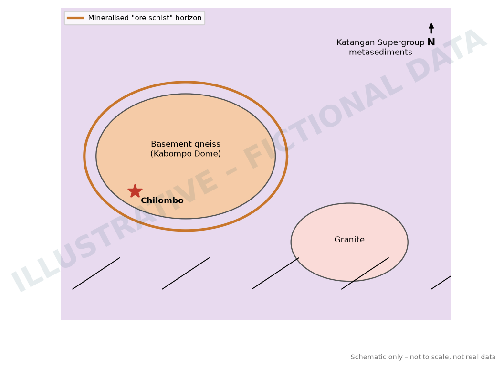
Illustrative figure – fictional data
Figure 4: Regional geological setting of the Chilombo Copper Project in north-western Zambia (grid lines shown in latitude and longitude)
The main copper deposits in the Domes Region of north-western Zambia are hosted by schists to gneisses within the lobes of the Kabompo Dome. The region is characterised by broadly north-directed thrusts and antiformal basement domes, surrounded by the Katangan Supergroup metasediments, which host both the Central African and Zambian Copperbelts and are major sources of global copper production.
The local stratigraphy is broadly based on the original basement-Katangan stratigraphy, but has been overturned and modified by shearing, high-grade metamorphism and thrusting.
The host rocks at Chilombo show contacts from unmineralised quartz-feldspar±phlogopite basement gneiss to a Cu ± Co mineralised quartz-phlogopite-muscovite-kyanite-sulphide “mineralised ore schist”. Ore-rock relationships suggest the ore is the product of metasomatic alteration and mineralisation of foliated pre-Katangan basement, although alternative interpretations are that the ore is hosted by sheared and structurally interleaved, mineralised Katangan sedimentary rocks.
The Lwele Central deposit represents a continuous, well-defined zone of copper mineralisation. The broad mineralised zones of economic interest range from structurally complex, folded geometry at Lwele Central to relatively simple, moderately east-dipping geometry at Lwele South, 3.5km to the south-southeast. Mineralisation boundaries are well defined at both deposits. Drilling has confirmed mineralisation over a strike length of 1,450m at Lwele Central (and 520m at Lwele South).
The orebodies, hosted by the “mineralised ore schist”, comprise high-grade metamorphosed, intensely mylonitised, recrystallised muscovite-phlogopite-quartz-kyanite schists with disseminated sulphides (typically <5%), dominated by chalcopyrite and bornite in fresh rock.
Weak Cu, Co and Au mineralisation also occurs in the intervening gneiss units between stacked orebodies. The internal structure of the mineralised package has an intensely transposed foliation defined by layer-parallel alignment of mica and quartz, and is attenuated and boudinaged in part, causing lensing along strike and down dip. The distribution of copper mineralisation is controlled by visibly identifiable strata-bound geology, within which copper grades are generally consistent (see Figure 5).
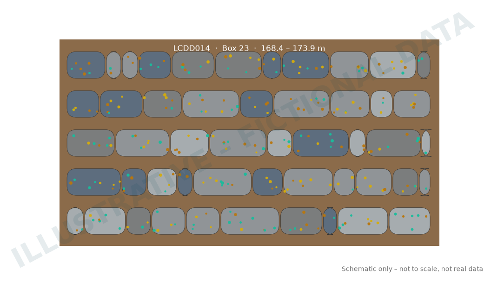
Illustrative figure – fictional data
Figure 5: High-grade copper mineralisation from Lwele Central within the “ore schist”
The shallow, tabular West Kasakula deposit lies 11km north-northeast of Lwele Central and is hosted within a banded, mica-rich biotite feldspathic gneiss, with disseminated copper mineralisation present as both chalcopyrite and bornite, accompanied by sphalerite, pyrite and pyrrhotite. The deposit has been dated as several hundred million years younger than Lwele Central and is thought to have been remobilised from the older mineralisation during intrusion of the granitic domal features.
Supplied Data
Halvorsen Resources has collated and compiled a large dataset covering the Chilombo Copper Project. The main data used to generate the Mineral Resource estimates include:
- Export of the drillhole database dated 4 May 2026
- Extensive archive of maps and reports
- Extensive archive of geophysical images
- Updated topographical surveys
- Working cross-sections and plans supplied by Halvorsen’s geological teams
The drillhole data is stored in Halvorsen’s GeoSpark™ 3D spatial database. Halvorsen spent considerable time validating and checking the historical drilling. All work is carried out in UTM Grid WGS84_Zone 35S.
Drilling Techniques and Drill Hole Spacing
Drill hole details (including drilling type) for the Chilombo Copper Project are tabulated in Appendix 1.
A review of sample spacing was carried out. This showed that drill spacing is generally 35m to 110m at Lwele Central and 100m to 180m at West Kasakula, extending out to 180–350m (see Figures 6–7).
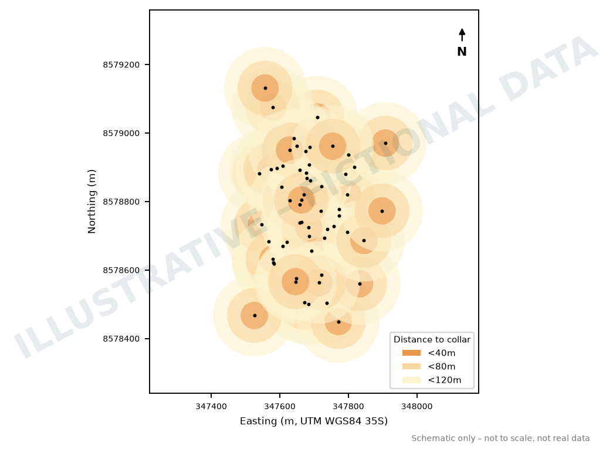
Illustrative figure – fictional data
Figure 6: Plan showing zones of influence for Lwele Central drilling – circles coloured by radius from drill collar
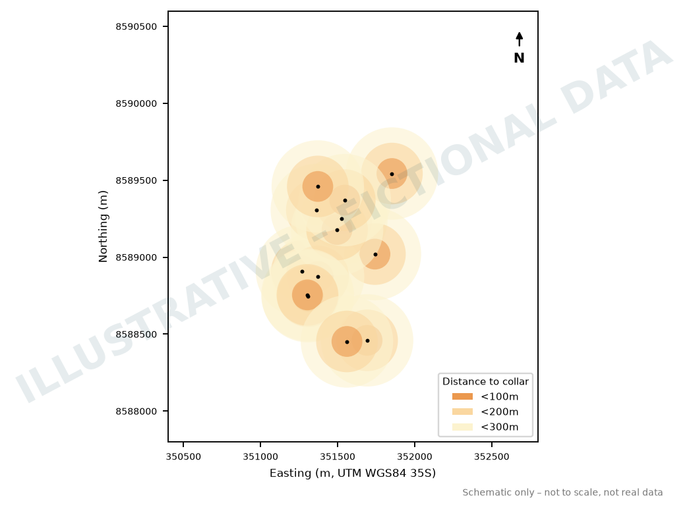
Illustrative figure – fictional data
Figure 7: Plan showing zones of influence for West Kasakula drilling – circles coloured by radius from drill collar (only holes south of the licence boundary line lie within 41872-HQ-LML)
Review and Validation of Data
All relevant data was initially imported into Micromine software for viewing and validation. The drill holes were incorporated into a Micromine drill database file named CHILOMBO_2026.DHDB, and a separate subset database named KasakulaWest.DHDB was used for the West Kasakula MRE. The drilling databases are summarised in Table 3 and Table 4.
Note – the Indicated & Inferred Sampamba MRE has not been updated from that reported by Halvorsen in its ASX announcement of 17 February 2026, Updated Chilombo MRE Delivers 57% Increase in Resource Tonnage.
The topographical file “topography” supplied by Halvorsen Resources was used as the topography surface for Lwele Central (and Lwele South).
The topographical file “Lwelewest_lidar_0_2_contourEXPANDED.dxf” supplied by Halvorsen was used as the topography surface for West Kasakula.
The collar plot of the Lwele drill holes is shown in Figure 8 and the collar plot of the West Kasakula drill holes is shown in Figure 9.
Table 3: Chilombo Copper Project drill hole data set used for updated Lwele Central MRE
| Prospect Name | Hole Type | Metres | Number of Holes |
|---|
| Lwele Central | DD | 13,466 | 42 |
| RC | 4,153 | 26 |
| RD | 9,654 | 47 |
| Subtotal | 27,273 | 115 |
| Total | 27,273 | 115 |
Table 4: Chilombo Copper Project drill hole data set used for West Kasakula MRE
| Prospect Name | Hole Type | Metres | Number of Holes |
|---|
| West Kasakula | DD | 2,806 | 13 |

Illustrative figure – fictional data
Figure 8: Plan of Lwele Central drill collars in the database used in the updated MRE
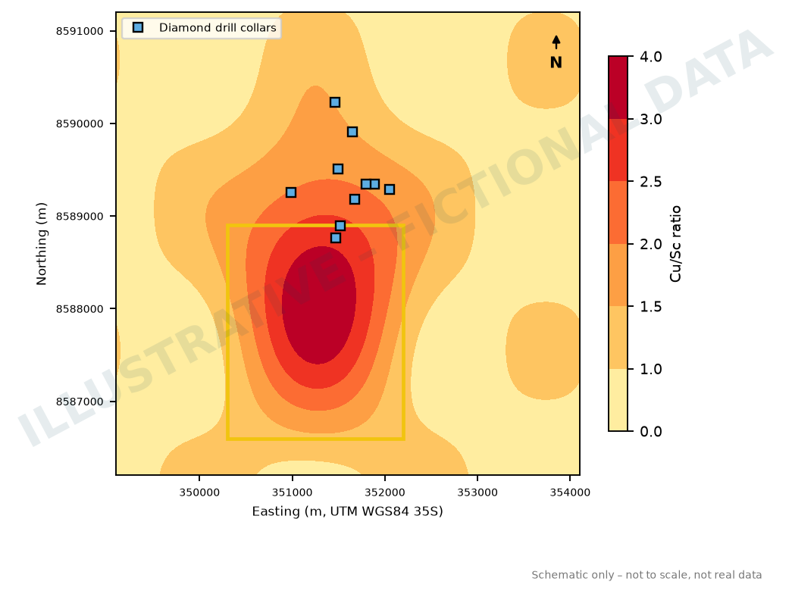
Illustrative figure – fictional data
Figure 9: Plan of West Kasakula drill collars in the database used in the maiden MRE
29 holes have been excluded from the updated Lwele Central MRE, out of a total dataset of 144. The excluded holes are listed in Table 5 below, together with the reasons for exclusion. The doubtful assays mainly relate to only the significant intercept or composite value being available in the database. These data were used to guide interpretation but were not used for estimation.
All existing drill hole data has been used for the maiden West Kasakula MRE, although only the portion of the maiden Inferred Mineral Resource inside Mining Licence 41872-HQ-LML has been reported.
Table 5: List of holes excluded from the updated estimate (Prospect LC means Lwele Central; Hole Type DD means diamond drillhole; RC means reverse circulation drillhole)
| Prospect | Hole Type | Year | Hole Number | Hole length (m) | Comment |
|---|
| LC | DD | 1999 | CL295 | 319 | Doubtful assays in historic hole |
| LC | DD | 1999 | CL296 | 590 | Doubtful assays in historic hole |
| LC | DD | 2012 | LWU1 | 345 | Doubtful assays in historic hole |
| LC | DD | 2012 | LWU2 | 398 | Doubtful assays in historic hole |
| LC | DD | 2014 | LWDD047 | 287 | Doubtful assays in historic hole |
| LC | DD | 2014 | LWDD050 | 253 | Doubtful assays in historic hole |
| LC | DD | 2025 | LCMT001 | 274 | Selective sampling for metallurgical purposes |
| LC | RC | 1999 | CLB00RC001 | 240 | Doubtful assays in historic hole |
| LC | RC | 1999 | CLB00RC002 | 170 | Doubtful assays in historic hole |
| LC | RC | 1999 | CLB00RC003 | 211 | Doubtful assays in historic hole |
| LC | RC | 1999 | CLB00RC004 | 233 | Doubtful assays in historic hole |
| LC | RC | 1999 | CLB00RC005 | 182 | Doubtful assays in historic hole |
| LC | RC | 1999 | CLB00RC006 | 164 | Doubtful assays in historic hole |
| LC | RC | 1999 | CLB00RC007 | 249 | Doubtful assays in historic hole |
| LC | RC | 1999 | CLB00RC008 | 178 | Doubtful assays in historic hole |
| LC | RC | 1999 | CLB00RC009 | 166 | Doubtful assays in historic hole |
| LC | RC | 1999 | CLB00RC010 | 110 | Doubtful assays in historic hole |
| LC | RC | 1999 | CLB00RC011 | 95 | Doubtful assays in historic hole |
| LC | RC | 1999 | CLB01RC001 | 219 | Doubtful assays in historic hole |
| LC | RC | 1999 | CLB01RC002 | 190 | Doubtful assays in historic hole |
| LC | RC | 1999 | CLB01RC003 | 223 | Doubtful assays in historic hole |
| LC | RC | 1999 | CLB01RC004 | 289 | Doubtful assays in historic hole |
| LC | RC | 1999 | CLB01RC005 | 308 | Doubtful assays in historic hole |
| LC | RC | 1999 | CLB01RC006 | 201 | Doubtful assays in historic hole |
| LC | RC | 1999 | CLB01RC007 | 189 | Doubtful assays in historic hole |
| LC | RC | 1999 | CLB01RC008 | 140 | Doubtful assays in historic hole |
| LC | RC | 1999 | CLB01RC009 | 236 | Doubtful assays in historic hole |
| LC | RC | 2012 | LWRC031 | 109 | Doubtful assays in historic hole |
| LC | RC | 2024 | LCRD019R | 20 | Hole abandoned; not assayed |
| Total | | | 29 | 6,588 | |
Drill Hole Surveys
Collars plot correctly on the topographic surface. All collar surveys are in the UTM WGS84_Zone 35S grid. Downhole survey details are as follows:
- Drill holes from before 2014 were surveyed with an EMS multishot camera.
- Drill holes between 2014 and 2024 were surveyed with a Reflex EZ-Shot EMS instrument.
- Drill holes from 2024 onwards have been surveyed with an INS downhole gyroscopic tool.
Bulk Density
Density measurements were taken from diamond drill core (using the mass-in-water method) and by downhole survey of RC holes. The density values were domained on the basis of geology and weathering to give average values for each domain. For the updated Lwele Central MRE the following bulk density values were used:
- 1.85 g/cm3 for overburden;
- 2.42 g/cm3 for oxide;
- 2.76 g/cm3 for transition; and
- 2.79 g/cm3 for fresh.
There are currently insufficient bulk density samples from West Kasakula to estimate reliable values at this stage. However, as the current Inferred Mineral Resources lie largely within fresh rock, Halvorsen has applied a default value of 2.76 g/cm3 to the entire MRE.
Project Site Visit
The Company’s Competent Person for reporting of Mineral Resources and Exploration Targets, Mr Michael Treloar (Treloar Resource Geology, Perth, Australia), visited the Chilombo Project site during June 2025 to review the QAQC, site, software data storage and laboratory protocols used by Halvorsen at Chilombo. Mr Treloar observed drilling in progress and the core logging facilities, and visited the SGS and ALS assay laboratories in Kalulushi and Kitwe respectively. Mr Treloar indicated that he was satisfied that Halvorsen Resources was aligned with industry-standard practices at the Project, and in some areas was working at best practice.
Mr Treloar had previously visited Zambia many times during the 1990s, including the Chilombo Copper Project area, while carrying out exploration for a major-company joint venture. He subsequently visited one of the tier-1 Domes Region operations several times while consulting to a major operator in the region during 2010. This has given him the geological experience and background to understand the differing, complex geology and mineralisation styles present at the Chilombo Copper Project.
Geological and Mineralisation Interpretation
With the drilling and topography surface loaded into Micromine, the first step was to model the solid geology.
Weathering Surfaces
Weathering surfaces were interpreted for the Lwele Central prospect. The surfaces were interpreted in Micromine as strings and then converted to 3D wireframes.
Surfaces were created for the base of complete oxidation (“BOCO”) and top of fresh rock (“TOFR”). At West Kasakula, the drilling is currently quite widely spaced, so it was not possible to define coherent weathering surfaces at this stage.
Geology Model
A geology model incorporating faults, cover rocks and bedrock lithologies was developed from the logged lithology and structures for Lwele Central, and interpreted in Leapfrog and Micromine software. The geology model for West Kasakula is largely interpretive at this stage, owing to the widely spaced nature of the current drilling.
Mineralisation Model
Copper mineralisation at Lwele Central was modelled using implicit vein tools within Micromine (see Figures 10–13). Mineralisation was split by weathering domain, with mineralisation interpreted as essentially flat in the oxide and transition domains, while in the fresh domain it was interpreted to follow lithology and foliation.
At West Kasakula, copper mineralisation was modelled using conventional strings and associated 3D wireframes, with two wireframes defined at present.
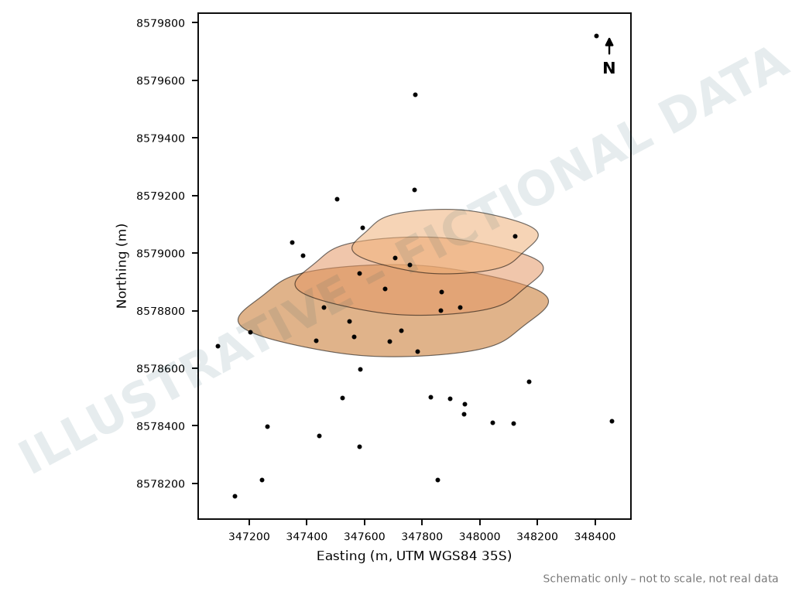
Illustrative figure – fictional data
Figure 10: Plan view showing mineralisation wireframes for the Lwele Central prospect
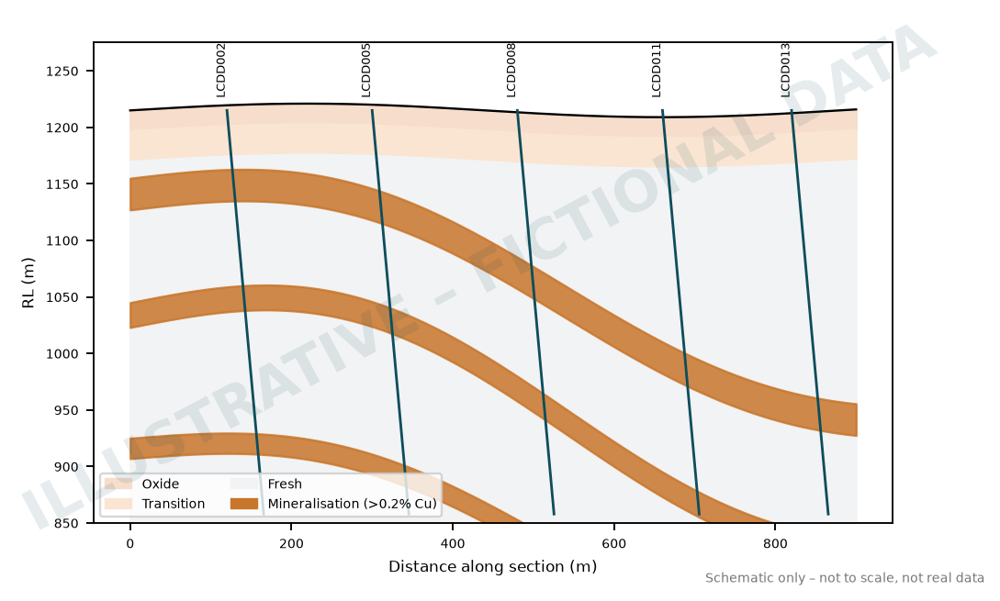
Illustrative figure – fictional data
Figure 11: Drilling cross-section showing mineralised wireframes for Lwele Central at 8578640mN
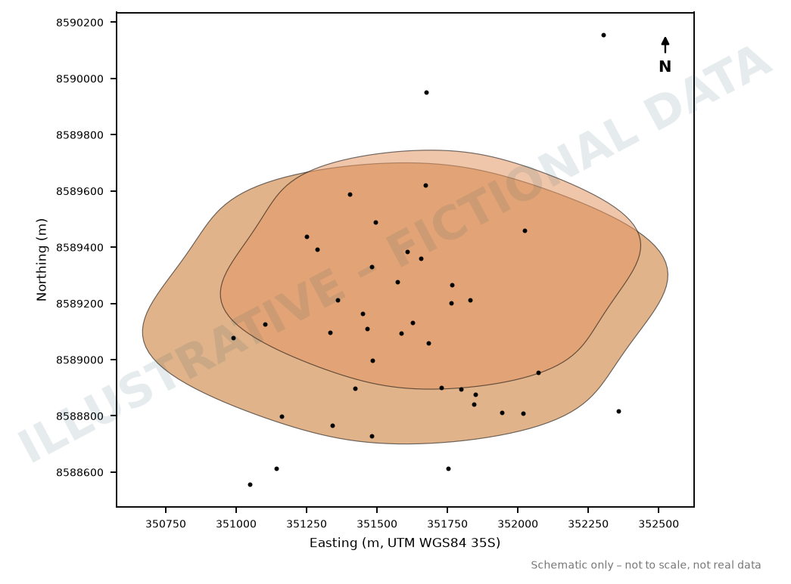
Illustrative figure – fictional data
Figure 12: Plan view showing current mineralised wireframes for West Kasakula
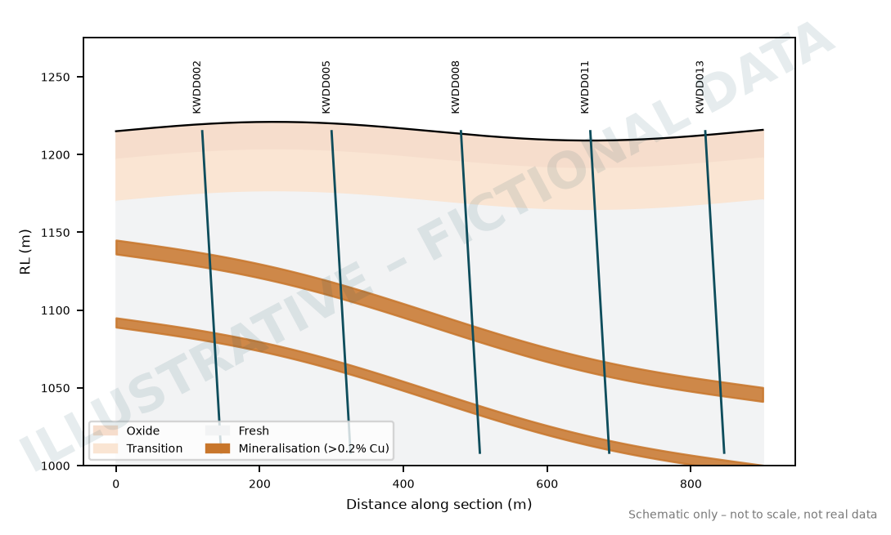
Illustrative figure – fictional data
Figure 13: Cross-section at 8591825mN showing shallow tabular copper mineralisation at West Kasakula
Technical Data Review
QAQC Analysis
QAQC has been documented for post-2014 drilling. The QAQC procedure has involved the use of Certified Reference Materials (CRMs), blanks and field duplicates.
- For every 100 samples, 5 standards, 3 field duplicates and 2 blanks are inserted;
- Each hole includes at least 1 standard, 1 field duplicate and 1 blank;
- A selection of CRMs is available to the geologists and insertion points are predetermined prior to drilling;
- 1m RC field duplicate samples are collected using a riffle splitter.
The results are stored in the drill hole database and are assessed as they are returned from the assay laboratory. No material issues have been identified with the drill hole sampling.
Domaining
The assay file was flagged with the relevant geology, mineralisation and weathering codes for Lwele Central, and with mineralisation codes for West Kasakula. Gaps in the downhole sequence were rectified with the missing interval function in Micromine.
The assigned background values are shown in Table 6 and were used for both the updated Lwele Central MRE and the maiden West Kasakula MRE.
Table 6: Background values assigned to missing or unassayed intervals
| Background value applied to missing or unassayed intervals | Field |
|---|
| 0.004 | Au Plot (ppm) |
| 0.004 | Co Plot (%) |
| 0.001 | Cu Plot (%) |
Basic Statistics
Statistical analysis was carried out on the samples to determine a suitable cut-off grade for modelling of the mineralisation.
Statistical analysis was carried out on samples within the mineralisation wireframes, grouped by weathering and by lithology.
The samples showed a sufficiently high Coefficient of Variation to warrant investigating the need for top-cutting. Plots were generated in Micromine by weathering, lithological and mineralisation domain, based mainly on the 95th percentile and on probability plots. No top-cuts were deemed necessary for the West Kasakula samples.
Table 7: Summary of top-cuts used for Lwele Central by mineralisation/weathering domain. A top-cut of 10,000 means no top-cut is applied
| Weathering Domain | Input Field | Output Field | Top-cut |
|---|
| OXIDE | AU_PLOT_PPM | AUCUT | 10000 |
| OXIDE | COPLOT_PC | COCUT | 10000 |
| OXIDE | CU_PLOT_PC | CUCUT | 10000 |
| TRANS | AU_PLOT_PPM | AUCUT | 10000 |
| TRANS | COPLOT_PC | COCUT | 10000 |
| TRANS | CU_PLOT_PC | CUCUT | 2.1 |
| FR | AU_PLOT_PPM | AUCUT | 0.7 |
| FR | COPLOT_PC | COCUT | 0.40 |
| FR | CU_PLOT_PC | CUCUT | 5.5 |
Geostatistics
Geostatistical analysis was carried out on the 1m composite assay files to generate variograms for the various mineralisation and weathering domains at Lwele Central, allowing copper grades to be estimated by Ordinary Kriging (OK). Inverse Distance Weighting (IDW) was used for copper as a check estimate. Gold and cobalt were estimated by Inverse Distance because reliable variograms could not be modelled.
At West Kasakula, Inverse Distance was used for all three metals because useful variograms could not be generated from the limited data available. Micromine software was used for this analysis.
Analysis was carried out to test for a proportional effect. This was found to be present, and relative variograms were therefore used for the updated Lwele Central copper estimate.
Block Modelling
Separate blank block models were created in Micromine for Lwele Central and West Kasakula. This process and the subsequent estimation steps were controlled by a macro, with the variables stored in forms, so that the process could be repeated.
The parent block size for the Lwele model was 12.5mE x 12.5mN x 5mRL, and for West Kasakula was 20mE x 20mN x 4mRL.
Weathering and lithology codes were assigned to the Lwele Central block model using the geology model wireframes. Only mineralisation codes were assigned to the West Kasakula model, as outlined above. Sub-blocking was applied to both the Lwele Central and West Kasakula models so that the block model volumes honour the source wireframes.
The Mineral Resource estimation workflow was as follows:
- Create a blank block model.
- Assign geology domains to the model (Lwele Central only).
- Assign weathering domains to the model (Lwele Central only).
- Assign AIR or BEDROCK based on topography.
- Assign the various mineralisation codes.
- Assign global density values.
- Update weathering flagging to fix areas where only a few blocks are coded (Lwele Central only).
- Estimate mineralisation domains using Inverse Distance Weighting (IDW) in three passes for Lwele Central and West Kasakula, estimating copper, gold and cobalt (the latter two for Lwele Central only).
- Estimate mineralisation domains using Ordinary Kriging (OK) in three passes, estimating copper only for Lwele Central.
- Apply classification and clean up the model.
- Report the model outputs.
Block Model Estimation
Micromine Version 2026 was used for the Mineral Resource estimates. Estimation was run in three passes with a progressively larger search radius, and a code of 1, 2 or 3 was written to the field PASS.
Grades were estimated into the model using the relevant values from the composite file. Only composites from within a mineralisation wireframe were used to estimate blocks within that wireframe. Estimation used an anisotropic search ellipse.
Resource Model Validation
Once estimation was complete, the Resource models were taken through the following validation steps:
- Volume comparison with the mineralisation wireframes;
- Comparison with composite grades;
- Visual checking;
- Checking for empty blocks; and
- Swath plots in various XYZ dimensions.
Mineral Resource Classification
Classification is based on:
- Drill spacing;
- Kriging variables (kriging efficiency and kriging variance, Lwele Central only); and
- Estimation pass block filling.
Lwele Central has been classified into Indicated and Inferred Mineral Resources, while West Kasakula has been classified as an Inferred Mineral Resource.
Reasonable Prospects for Eventual Economic Extraction
Clause 20 of the JORC 2012 Reporting Code states that a Mineral Resource must have reasonable prospects for eventual economic extraction (RPEEE) (Joint Ore Reserves Committee, 2012). In applying this Clause, Treloar Resource Geology has considered that:
- The Chilombo Copper Project is within 75km of existing copper processing plants at major operating open-pit copper mines in the region;
- The Project sits on two granted 25-year mining licences;
- The copper grades are reported above a sensible cut-off grade;
- The deposits are geologically similar to those currently mined at tier-1 Domes Region operations and have similar copper grades;
- Metallurgical testing on transition and fresh mineralised composites from Lwele Central has shown that a copper concentrate can be recovered at economic grades; and
- West Kasakula contains copper sulphide mineralisation similar to Sampamba, where test work has shown that a copper concentrate can be recovered at economic grades.
Figure 14 shows the classified blocks for Lwele Central. The West Kasakula Mineral Resources are all classified in the Inferred category under the JORC (2012) Code.
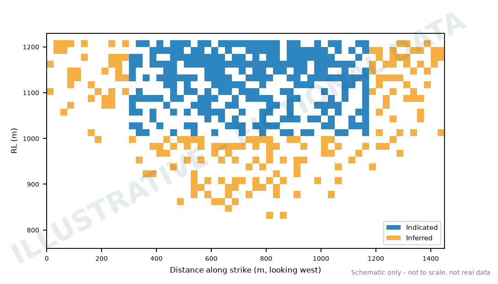
Illustrative figure – fictional data
Figure 14: Long-section projection of the Lwele Central Resource block model coloured by classification (looking west)
Summary and Reporting
Summaries of the Mineral Resource estimates for Lwele Central and West Kasakula are shown in Tables 8–9. Approximately 90% of the Lwele Central resources report as fresh, while 100% of the West Kasakula resources report as fresh.
Table 8: Lwele Central Mineral Resource estimate using 0.2% Cu cut-off and classified using JORC2012
| Classification | Weathering | Cut-off (%) | Mass (000,000’s) (t) | Copper OK Grade (%) | Gold IDW Grade (g/t) | Cobalt IDW Grade (%) | Copper OK Mass (t) | Gold IDW Mass (oz) | Cobalt IDW Mass (t) |
|---|
| INDICATED | OX | >0.2% Cu | 0.3 | 0.28 | 0.02 | 0.02 | 1,000 | 200 | 100 |
| TR | >0.2% Cu | 7.5 | 0.52 | 0.09 | 0.03 | 38,800 | 21,600 | 2,300 |
| FR | >0.2% Cu | 38.2 | 0.51 | 0.06 | 0.02 | 193,500 | 68,600 | 8,700 |
| Subtotal | 46.1 | 0.51 | 0.06 | 0.02 | 233,300 | 90,400 | 11,100 |
| INFERRED | OX | >0.2% Cu | 1.0 | 0.35 | 0.02 | 0.02 | 3,400 | 700 | 200 |
| TR | >0.2% Cu | 4.7 | 0.45 | 0.04 | 0.01 | 21,100 | 5,300 | 500 |
| FR | >0.2% Cu | 77.1 | 0.46 | 0.06 | 0.02 | 357,500 | 145,500 | 15,100 |
| Subtotal | 82.7 | 0.46 | 0.06 | 0.02 | 382,100 | 151,600 | 15,700 |
| Total | 128.8 | 0.48 | 0.06 | 0.02 | 615,300 | 242,000 | 26,800 |
Differences may occur in totals due to rounding.
Table 9: West Kasakula Inferred Mineral Resource estimate using 0.2% Cu cut-off and classified using JORC2012
| Classification | Cut-off (%) | Mass (000,000’s) (t) | Copper IDW Grade (%) | Gold IDW Grade (g/t) | Cobalt IDW Grade (%) | Copper IDW Mass (t) | Gold IDW Mass (oz) | Cobalt IDW Mass (t) |
|---|
| Inferred | >0.2% Cu | 22.6 | 0.41 | 0.02 | 0.01 | 93,100 | 17,400 | 1,800 |
| Total | 22.6 | 0.41 | 0.02 | 0.01 | 93,100 | 17,400 | 1,800 |
Differences may occur in totals due to rounding.
Comparison with Previous Estimates
The comparison is made with the February 2026 Indicated and Inferred MRE for the Chilombo Copper Project. Table 10 compares the current Mineral Resource estimate with the previous estimate for the Chilombo Copper Project. It shows an increase of 19% in tonnes and 16% in contained copper since the last estimate in February 2026.
No previous estimates have been completed for West Kasakula, and the Sampamba MRE has not been updated since February 2026.
Table 10: Comparison between current and previous Lwele Central Mineral Resource estimates (including the maiden West Kasakula and unchanged Sampamba MREs) using 0.2% Cu cut-off and classified using JORC2012
| Prospect | Classification | February 2026 | May 2026 | % Difference |
|---|
| Indicated | Inferred | Total | Indicated | Inferred | Total | Indicated | Inferred | Total |
|---|
| Lwele Central | Mass (Mt) | 44.6 | 79.3 | 123.9 | 46.1 | 82.7 | 128.8 | 3% | 4% | 4% |
| Copper Grade (%) | 0.51 | 0.47 | 0.48 | 0.51 | 0.46 | 0.48 | -1% | -1% | -1% |
| Copper Mass (t) | 228,400 | 371,100 | 599,500 | 233,300 | 382,100 | 615,300 | 2% | 3% | 3% |
| Sampamba | Mass (Mt) | 14.2 | 4.6 | 18.8 | 14.2 | 4.6 | 18.8 | 0% | 0% | 0% |
| Copper Grade (%) | 0.52 | 0.49 | 0.51 | 0.52 | 0.49 | 0.51 | 0% | 0% | 0% |
| Copper Mass (t) | 74,400 | 22,400 | 96,800 | 74,400 | 22,400 | 96,800 | 0% | 0% | 0% |
| West Kasakula | Mass (Mt) | | | | | 22.6 | 22.6 | | | |
| Copper Grade (%) | | | | | 0.41 | 0.41 | | | |
| Copper Mass (t) | | | | | 93,100 | 93,100 | | | |
| Total | Mass (Mt) | 58.8 | 83.9 | 142.7 | 60.3 | 109.9 | 170.2 | 3% | 31% | 19% |
| Copper Grade (%) | 0.51 | 0.47 | 0.49 | 0.51 | 0.45 | 0.47 | -1% | -3% | -3% |
| Copper Mass (t) | 302,800 | 393,500 | 696,300 | 307,700 | 497,600 | 805,300 | 2% | 26% | 16% |
Upside Potential
Both the Lwele Central and West Kasakula deposits remain open along strike and along the defined plunges of the copper mineralisation.
Conclusions
The total Mineral Resources for Lwele Central, West Kasakula and Sampamba are set out in Table 1. The combined Indicated and Inferred Mineral Resources (including Sampamba) are estimated at 170.2 Mt at 0.47% Cu, 0.02% Co and 0.05 g/t Au for 805.3 kt of copper, 259,400 oz of gold and 28.6 kt of cobalt.
Ongoing Technical Studies
- Continue open pit optimisation engineering and scoping-level economic studies for Lwele Central, Sampamba and West Kasakula ahead of further extensive drilling;
- Begin metallurgical test work to establish recovery information for West Kasakula;
- Continue gold assaying of all new copper intersections delineated during the Phase 3 drilling programmes across the Chilombo Project during 2026, to increase confidence in the sample support for future Mineral Resource updates, with the aim of significantly growing the gold inventory of the overall Project; and
- Progress metallurgical test work on indicative gold and cobalt recoveries from the fresh, transition and oxide domains at Lwele Central, to confirm metallurgical performance and the production of a copper concentrate with economic by-product gold credits.
Phase 3 Chilombo Exploration and Drilling Programme
The Phase 3 2026 exploration and drilling programme at Chilombo commenced in early May, with a strong focus on regional growth targets.
Key focus areas for this field season include:
- ‘Lwele Hub’ growth. Mineral Resource extension drilling adjacent to the shallower, southern up-dip areas of the Lwele Central deposit, an initial focus on the Lwele West area (located approximately 1.8km west of Lwele Central) and testing of a well-defined airborne geophysical conductor northeast of the Lwele South prospect (see Figure 15 for locations).
- Key regional targets. Geophysical IP surveying together with shallow aircore and RC drill testing of regional targets at Kalwanyembe, Sokoshi, Mbalango, West Kasakula and Kafwila, plus follow-up diamond drilling of key upgraded targets.
- Technical workstreams. Continued technical studies in support of an initial Scoping Study targeted for completion in early 2027, with a strong emphasis on further metallurgical test work for copper, gold and cobalt at Lwele Central and copper at Sampamba.
Illustrative figure – fictional data
Figure 15: Chilombo Mining Licences showing the location of current prospects
This release was authorised by Daniel Whitcombe, CEO and Managing Director.
For further information, please contact:
Competent Person’s Statement
The information in this announcement that relates to the Chilombo Project Exploration Results is based on information compiled by Mr Graham Keeble, a Competent Person who is a Member of The Australasian Institute of Mining and Metallurgy (MAusIMM) and The Southern African Institute of Mining and Metallurgy (SAIMM). Mr Keeble is the Company’s Chief Geologist. Mr Keeble has sufficient experience relevant to the style of mineralisation and type of deposit under consideration and to the activity he is undertaking to qualify as a Competent Person (CP) as defined in the 2012 Edition of the “Australasian Code for Reporting of Exploration Results, Mineral Resources and Ore Reserves”. Mr Keeble consents to the inclusion in the report of the matters based on his information in the form and context in which it appears.
The information in this report that relates to the Chilombo Project Mineral Resources and Exploration Targets is based on information compiled by Mr Michael Treloar, a Competent Person who is a Fellow of The Australasian Institute of Mining and Metallurgy (FAusIMM (CPGeo)). Mr Treloar is a full-time consultant with Treloar Resource Geology. Mr Treloar has sufficient experience that is relevant to the style of mineralisation and type of deposit under consideration and to the activity being undertaken to qualify as a Competent Person as defined in the 2012 Edition of the ‘Australasian Code for Reporting of Exploration Results, Mineral Resources and Ore Reserves’. Mr Treloar consents to the inclusion in the report of the matters based on his information in the form and context in which it appears.
The information in this announcement that relates to the Chilombo Copper Project metallurgical testing is based on information compiled by Mr Robert Mwanza, a Competent Person who is a Member of The Australasian Institute of Mining and Metallurgy (MAusIMM). Mr Mwanza has sufficient experience relevant to the style of mineralisation and type of deposit under consideration and to the activity he is undertaking to qualify as a Competent Person (CP) as defined in the 2012 Edition of the “Australasian Code for Reporting of Exploration Results, Mineral Resources and Ore Reserves”. Mr Mwanza consents to the inclusion in the report of the matters based on his information in the form and context in which it appears.
Halvorsen confirms it is not aware of any new information or data that materially affects the information included in the original market announcements. Halvorsen confirms the form and context in which the Competent Person’s findings are presented have not been materially modified from the original market announcements.
Compliance Statements
Copper equivalent (CuEq) has been used to report Mineral Resource estimated tonnages and associated grades that carry both gold and cobalt credits at the Chilombo Copper Project. Halvorsen has confidence, based on the metallurgical test work completed to date on transition and fresh copper composites from the Lwele Central deposit, that gold and cobalt will be recoverable by conventional flotation processing and copper concentration. These metals are commonly traded on world commodity markets. It is Halvorsen’s opinion that all the elements included in the metal equivalents calculation have reasonable potential to be recovered and sold in the future.
Caution Regarding Forward-Looking Information
This announcement may contain some references to forecasts, estimates, assumptions and other forward-looking statements. Although the Company believes that its expectations, estimates and forecast outcomes are based on reasonable assumptions, it can give no assurance that they will be achieved. They may be affected by a variety of variables and changes in underlying assumptions that are subject to risk factors associated with the nature of the business, which could cause actual results to differ materially from those expressed herein. All references to dollars ($) and cents in this announcement are in Australian currency, unless otherwise stated. Investors should make and rely upon their own enquiries before deciding to acquire or deal in the Company’s securities.
About Halvorsen Resources Limited (ASX: HVR, FRA: 3HV)
Halvorsen Resources Limited (ASX: HVR, FRA: 3HV) is an ASX-listed company focused on the exploration and development of electrification and battery metals projects in the broader sub-Saharan African region.
About the Chilombo Copper Project
The Chilombo Copper Project (87.5% Halvorsen) (Chilombo) is situated in the world-class Central African Copperbelt region of north-western Zambia. Located on two granted Large Scale Mining Licences (41872-HQ-LML; 41893-HQ-LML), Chilombo covers approximately 329 square kilometres of highly prospective tenure that lies close to several major mines hosted in similar geological settings.
Halvorsen’s Phase 1 drilling programme at Chilombo returned highly encouraging results, validating the growth potential of the significant copper endowment at Lwele Central and providing further confidence in a potential future large-scale, open pit mining development at Chilombo.
The Phase 2 drilling and exploration programmes began in mid-May and were completed in November 2025.
In May 2026, Halvorsen delivered an updated JORC-reportable Indicated and Inferred Mineral Resource estimate for Chilombo of 170.2Mt @ 0.47% Cu (0.54% CuEq) for 805kt of contained copper.

Illustrative figure – fictional data
Figure 16: Location of the Chilombo Copper Project in north-western Zambia
About Copper
Copper is a soft, ductile metal with a distinctive reddish hue and one of the highest electrical and thermal conductivities of any element. Used by people for more than ten millennia, it is today consumed predominantly in power generation and transmission, building wiring, electronics and industrial machinery. Demand is expected to grow strongly through the energy transition: electric vehicles typically contain three to four times more copper than conventional vehicles, and renewable generation, grid expansion and data centres are all copper-intensive. Copper is also widely alloyed to produce brass and bronze for plumbing, coinage and architectural uses.
APPENDIX 1: Drill collar locations and drill hole details for the Chilombo Copper Project (Datum is UTM_WGS84_35S)
| Hole_ID | Drill Type | Deposit | DH_East | DH_North | DH_RL | Datum | DH_Dip | DH_Azimuth | DH_Depth |
|---|
| HX23_1 | DD | Lwele Central | 347751 | 8578857 | 1220 | UTM_WGS84_35S | -70 | 90 | 313.45 |
| HX23_3 | DD | Lwele Central | 347731 | 8578560 | 1216 | UTM_WGS84_35S | -70 | 270 | 347.14 |
| HX23_4 | DD | Lwele Central | 347826 | 8578411 | 1213 | UTM_WGS84_35S | -70 | 90 | 274.21 |
| SBDD001 | DD | Sampamba | 357398 | 8584412 | 1156 | UTM_WGS84_35S | -70 | 228 | 221.91 |
| SBDD002 | DD | Sampamba | 357530 | 8584560 | 1166 | UTM_WGS84_35S | -70 | 228 | 296.67 |
| SBDD003 | DD | Sampamba | 357975 | 8583860 | 1156 | UTM_WGS84_35S | -60 | 273 | 165.52 |
| SBDD004 | DD | Sampamba | 357650 | 8584160 | 1156 | UTM_WGS84_35S | -70 | 228 | 219.70 |
| SBDD005 | DD | Sampamba | 358430 | 8583490 | 1158 | UTM_WGS84_35S | -70 | 228 | 202.90 |
| SBDD006 | DD | Sampamba | 357040 | 8584600 | 1160 | UTM_WGS84_35S | -70 | 138 | 300.27 |
| SBDD007 | DD | Sampamba | 357948 | 8584014 | 1151 | UTM_WGS84_35S | -70 | 228 | 252.31 |
| SBDD008 | DD | Sampamba | 358637 | 8583702 | 1170 | UTM_WGS84_35S | -70 | 228 | 226.54 |
| SPDD001 | DD | Sampamba | 357470 | 8584530 | 1223 | UTM_WGS84_35S | -70 | 220 | 283.62 |
| SPDD002 | DD | Sampamba | 357480 | 8584340 | 1225 | UTM_WGS84_35S | -70 | 220 | 219.96 |
| SPDD003 | DD | Sampamba | 357840 | 8584080 | 1223 | UTM_WGS84_35S | -70 | 220 | 213.60 |
| SPDD004 | DD | Sampamba | 357600 | 8584260 | 1225 | UTM_WGS84_35S | -70 | 220 | 213.85 |
| SPDD005 | DD | Sampamba | 358070 | 8583950 | 1225 | UTM_WGS84_35S | -70 | 220 | 194.70 |
| SPDD006 | DD | Sampamba | 357868 | 8584016 | 1214 | UTM_WGS84_35S | -60 | 225 | 215.21 |
| SPDD007 | DD | Sampamba | 357326 | 8584328 | 1219 | UTM_WGS84_35S | -60 | 225 | 167.71 |
| SPDD008 | DD | Sampamba | 358122 | 8583888 | 1226 | UTM_WGS84_35S | -60 | 225 | 207.56 |
| SPDD009 | DD | Sampamba | 357650 | 8584050 | 1222 | UTM_WGS84_35S | -60 | 225 | 157.98 |
| SPDD010 | DD | Sampamba | 357845 | 8584393 | 1229 | UTM_WGS84_35S | -70 | 180 | 408.77 |
| SPDD011 | DD | Sampamba | 357650 | 8584460 | 1232 | UTM_WGS84_35S | -70 | 220 | 374.09 |
| SPDD012 | DD | Sampamba | 357789 | 8584586 | 1238 | UTM_WGS84_35S | -60 | 225 | 350.31 |
| SPDD013 | DD | Sampamba | 358298 | 8583803 | 1232 | UTM_WGS84_35S | -60 | 225 | 176.31 |
| SPDD014 | DD | Sampamba | 357255 | 8584255 | 1216 | UTM_WGS84_35S | -60 | 225 | 149.56 |
| SPDD015 | DD | Sampamba | 357467 | 8584204 | 1224 | UTM_WGS84_35S | -60 | 220 | 211.47 |
| SPDD016 | DD | Sampamba | 357662 | 8584013 | 1221 | UTM_WGS84_35S | -60 | 225 | 260.03 |
| SPDD017 | DD | Sampamba | 358048 | 8583808 | 1223 | UTM_WGS84_35S | -60 | 225 | 186.11 |
| SPDD018 | DD | Sampamba | 357314 | 8584474 | 1215 | UTM_WGS84_35S | -70 | 220 | 210.32 |
| SPDD019 | DD | Sampamba | 357187 | 8584305 | 1209 | UTM_WGS84_35S | -70 | 220 | 159.37 |
| SPMT001 | DD | Sampamba | 357398 | 8584267 | 1217 | UTM_WGS84_35S | -60 | 220 | 158.93 |
| CLB00RC001 | RCD | Lwele Central | 347730 | 8579082 | 1223 | UTM_WGS84_35S | -60 | 90 | 240.34 |
| CLB00RC002 | RCD | Lwele Central | 347817 | 8579057 | 1220 | UTM_WGS84_35S | -60 | 90 | 170.36 |
| CLB00RC003 | RCD | Lwele Central | 347969 | 8579061 | 1215 | UTM_WGS84_35S | -60 | 90 | 211.49 |
| CLB00RC004 | RCD | Lwele Central | 347725 | 8578654 | 1218 | UTM_WGS84_35S | -60 | 90 | 232.75 |
| CLB00RC005 | RCD | Lwele Central | 347793 | 8578719 | 1217 | UTM_WGS84_35S | -60 | 90 | 181.63 |
| CLB00RC006 | RCD | Lwele Central | 347945 | 8578722 | 1212 | UTM_WGS84_35S | -60 | 90 | 164.12 |
| CLB00RC007 | RCD | Lwele Central | 347445 | 8578345 | 1220 | UTM_WGS84_35S | -60 | 90 | 249.26 |
| CLB00RC008 | RCD | Lwele Central | 347698 | 8578312 | 1215 | UTM_WGS84_35S | -60 | 90 | 178.09 |
| CLB00RC009 | RCD | Lwele Central | 347851 | 8578325 | 1213 | UTM_WGS84_35S | -60 | 90 | 166.10 |
| CLB00RC010 | RCD | Lwele Central | 348004 | 8578332 | 1209 | UTM_WGS84_35S | -60 | 90 | 109.63 |
| CLB00RC011 | RCD | Lwele Central | 348275 | 8578310 | 1215 | UTM_WGS84_35S | -60 | 90 | 95.18 |
| CLB01RC001 | RCD | Lwele Central | 347811 | 8578134 | 1212 | UTM_WGS84_35S | -60 | 93 | 219.09 |
| CLB01RC002 | RCD | Lwele Central | 347786 | 8578520 | 1215 | UTM_WGS84_35S | -60 | 90 | 190.41 |
| CLB01RC003 | RCD | Lwele Central | 347992 | 8578924 | 1213 | UTM_WGS84_35S | -60 | 93 | 222.26 |
| CLB01RC004 | RCD | Lwele Central | 347848 | 8578916 | 1217 | UTM_WGS84_35S | -60 | 93 | 288.66 |
| CLB01RC005 | RCD | Lwele Central | 347872 | 8579463 | 1222 | UTM_WGS84_35S | -90 | 0 | 308.07 |
| CLB01RC006 | RCD | Lwele Central | 347997 | 8579474 | 1219 | UTM_WGS84_35S | -90 | 0 | 201.41 |
| CLB01RC007 | RCD | Lwele Central | 348088 | 8579898 | 1233 | UTM_WGS84_35S | -90 | 0 | 189.13 |
| CLB01RC008 | RCD | Lwele Central | 347890 | 8579898 | 1238 | UTM_WGS84_35S | -90 | 0 | 139.63 |
| CLB01RC009 | RCD | Lwele Central | 347296 | 8579494 | 1247 | UTM_WGS84_35S | -90 | 0 | 235.74 |
| CL296 | RCD | Lwele Central | 347740 | 8578950 | 1221 | UTM_WGS84_35S | -90 | 0 | 589.37 |
| KWDD001 | DD | West Kasakula | 350250 | 8591510 | 1190 | UTM_WGS84_35S | -70 | 90 | 283.35 |
| KWDD002 | DD | West Kasakula | 350400 | 8591360 | 1190 | UTM_WGS84_35S | -70 | 90 | 241.11 |
| KWDD003 | DD | West Kasakula | 350823 | 8591697 | 1183 | UTM_WGS84_35S | -70 | 90 | 227.62 |
| KWDD004 | DD | West Kasakula | 350974 | 8591827 | 1188 | UTM_WGS84_35S | -70 | 110 | 141.69 |
| KWDD006 | DD | West Kasakula | 351165 | 8592358 | 1197 | UTM_WGS84_35S | -70 | 110 | 136.39 |
| KWDD007 | DD | West Kasakula | 350405 | 8591510 | 1185 | UTM_WGS84_35S | -70 | 90 | 178.58 |
| KWDD008 | DD | West Kasakula | 350271 | 8591824 | 1200 | UTM_WGS84_35S | -70 | 90 | 265.12 |
| KWDD009 | DD | West Kasakula | 350575 | 8591825 | 1185 | UTM_WGS84_35S | -70 | 100 | 163.89 |
| KWDD010 | DD | West Kasakula | 350775 | 8591825 | 1190 | UTM_WGS84_35S | -70 | 100 | 149.98 |
| KWDD011 | DD | West Kasakula | 350775 | 8592225 | 1185 | UTM_WGS84_35S | -70 | 100 | 143.00 |
| LCDD001 | DD | Lwele Central | 347849 | 8578509 | 1213 | UTM_WGS84_35S | -70 | 90 | 173.33 |
| LCDD002 | DD | Lwele Central | 347950 | 8578511 | 1211 | UTM_WGS84_35S | -70 | 90 | 227.61 |
| LCDD003 | DD | Lwele Central | 347698 | 8578757 | 1220 | UTM_WGS84_35S | -70 | 90 | 265.72 |
| LCDD004 | DD | Lwele Central | 347594 | 8579053 | 1226 | UTM_WGS84_35S | -70 | 90 | 460.21 |
| LCDD005 | DD | Lwele Central | 347791 | 8578254 | 1212 | UTM_WGS84_35S | -70 | 90 | 182.12 |
| LCDD006 | DD | Lwele Central | 347895 | 8578257 | 1210 | UTM_WGS84_35S | -70 | 90 | 172.87 |
| LCDD007 | DD | Lwele Central | 347626 | 8578934 | 1224 | UTM_WGS84_35S | -70 | 90 | 460.22 |
| LCDD008 | DD | Lwele Central | 347650 | 8578634 | 1215 | UTM_WGS84_35S | -70 | 90 | 471.87 |
| LCDD009 | DD | Lwele Central | 347775 | 8579310 | 1225 | UTM_WGS84_35S | -70 | 90 | 422.40 |
| LCDD010 | DD | Lwele Central | 347560 | 8578710 | 1220 | UTM_WGS84_35S | -70 | 90 | 385.96 |
| LCDD011 | DD | Lwele Central | 347825 | 8309560 | 1220 | UTM_WGS84_35S | -70 | 90 | 394.18 |
| LCDD012 | DD | Lwele Central | 347500 | 8578630 | 1220 | UTM_WGS84_35S | -70 | 90 | 386.92 |
| LCDD013 | DD | Lwele Central | 346950 | 8579060 | 1235 | UTM_WGS84_35S | -60 | 90 | 817.08 |
| LCDD014 | DD | Lwele Central | 347850 | 8579810 | 1230 | UTM_WGS84_35S | -70 | 90 | 374.81 |
| LCDD015 | DD | Lwele Central | 347650 | 8578415 | 1215 | UTM_WGS84_35S | -70 | 90 | 241.41 |
| LCDD016 | DD | Lwele Central | 347495 | 8578415 | 1219 | UTM_WGS84_35S | -70 | 90 | 247.82 |
| LCDD017 | DD | Lwele Central | 347650 | 8578255 | 1215 | UTM_WGS84_35S | -70 | 90 | 113.62 |
| LCDD018 | DD | Lwele Central | 347650 | 8578110 | 1214 | UTM_WGS84_35S | -70 | 90 | 211.42 |
| LCDD019 | DD | Lwele Central | 347650 | 8577985 | 1213 | UTM_WGS84_35S | -70 | 90 | 285.38 |
| LCDD020 | DD | Lwele Central | 347430 | 8578315 | 1214 | UTM_WGS84_35S | -70 | 90 | 244.94 |
| LCDD021 | DD | Lwele Central | 347590 | 8578315 | 1214 | UTM_WGS84_35S | -70 | 90 | 162.74 |
| LCDD022 | DD | Lwele Central | 347575 | 8578510 | 1214 | UTM_WGS84_35S | -70 | 90 | 243.20 |
| LCDD023 | DD | Lwele Central | 347500 | 8578805 | 1214 | UTM_WGS84_35S | -70 | 90 | 388.63 |
| LCMT001 | DD | Lwele Central | 347748 | 8578629 | 1217 | UTM_WGS84_35S | -90 | 0 | 273.64 |
| LCMT002 | DD | Lwele Central | 347714 | 8579054 | 1220 | UTM_WGS84_35S | -70 | 82 | 453.17 |
| LCRD001 | RCD | Lwele Central | 347949 | 8578857 | 1214 | UTM_WGS84_35S | -70 | 90 | 271.49 |
| LCRD002 | RCD | Lwele Central | 347990 | 8578558 | 1210 | UTM_WGS84_35S | -70 | 90 | 206.29 |
| LCRD003 | RCD | Lwele Central | 347918 | 8579056 | 1217 | UTM_WGS84_35S | -70 | 90 | 261.98 |
| LCRD004A | RCD | Lwele Central | 347616 | 8578857 | 1223 | UTM_WGS84_35S | -70 | 90 | 67.15 |
| LCRD004R | RCD | Lwele Central | 347610 | 8578857 | 1223 | UTM_WGS84_35S | -70 | 90 | 408.08 |
| LCRD005 | RCD | Lwele Central | 347773 | 8579162 | 1223 | UTM_WGS84_35S | -70 | 90 | 454.72 |
| LCRD006 | RCD | Lwele Central | 347871 | 8578758 | 1215 | UTM_WGS84_35S | -70 | 90 | 94.32 |
| LCRD007 | RCD | Lwele Central | 347699 | 8578857 | 1221 | UTM_WGS84_35S | -70 | 90 | 352.10 |
| LCRD008 | RCD | Lwele Central | 347869 | 8578709 | 1215 | UTM_WGS84_35S | -70 | 90 | 203.52 |
| LCRD009 | RCD | Lwele Central | 347600 | 8578756 | 1222 | UTM_WGS84_35S | -70 | 90 | 410.78 |
| LCRD010 | RCD | Lwele Central | 347650 | 8578806 | 1222 | UTM_WGS84_35S | -70 | 90 | 517.50 |
| LCRD011 | RCD | Lwele Central | 347946 | 8578408 | 1210 | UTM_WGS84_35S | -70 | 90 | 187.40 |
| LCRD012 | RCD | Lwele Central | 347901 | 8578906 | 1216 | UTM_WGS84_35S | -70 | 90 | 345.42 |
| LCRD013 | RCD | Lwele Central | 347948 | 8578913 | 1214 | UTM_WGS84_35S | -70 | 90 | 42.99 |
| LCRD014 | RCD | Lwele Central | 347548 | 8578405 | 1218 | UTM_WGS84_35S | -70 | 90 | 61.24 |
| LCRD015 | RCD | Lwele Central | 347449 | 8578407 | 1220 | UTM_WGS84_35S | -70 | 90 | 53.00 |
| LCRD016 | RCD | Lwele Central | 347749 | 8578254 | 1213 | UTM_WGS84_35S | -70 | 90 | 75.52 |
| LCRD017 | RCD | Lwele Central | 347794 | 8578254 | 1212 | UTM_WGS84_35S | -70 | 90 | 53.07 |
| LCRD018 | RCD | Lwele Central | 347853 | 8578256 | 1211 | UTM_WGS84_35S | -70 | 90 | 75.09 |
| LCRD019 | RCD | Lwele Central | 347895 | 8578257 | 1210 | UTM_WGS84_35S | -70 | 90 | 55.46 |
| LCRD019R | RCD | Lwele Central | 347906 | 8578258 | 1210 | UTM_WGS84_35S | -70 | 90 | 19.84 |
| LCRD020 | RCD | Lwele Central | 347950 | 8578257 | 1209 | UTM_WGS84_35S | -70 | 90 | 65.30 |
| LCRD021 | RCD | Lwele Central | 347891 | 8578609 | 1214 | UTM_WGS84_35S | -70 | 90 | 82.47 |
| LCRD022 | RCD | Lwele Central | 347868 | 8578635 | 1215 | UTM_WGS84_35S | -70 | 90 | 181.95 |
| LCRD023 | RCD | Lwele Central | 347570 | 8579156 | 1228 | UTM_WGS84_35S | -70 | 90 | 627.67 |
| LCRD024 | RCD | Lwele Central | 347954 | 8578957 | 1215 | UTM_WGS84_35S | -70 | 90 | 53.75 |
| LCRD025 | RCD | Lwele Central | 347850 | 8578937 | 1218 | UTM_WGS84_35S | -70 | 90 | 99.19 |
| LCRD026 | RCD | Lwele Central | 347467 | 8579105 | 1230 | UTM_WGS84_35S | -70 | 90 | 694.58 |
| LCRD027 | RCD | Lwele Central | 347647 | 8578710 | 1220 | UTM_WGS84_35S | -70 | 90 | 111.50 |
| LSDD001 | DD | Lwele South | 347020 | 8575030 | 1195 | UTM_WGS84_35S | -70 | 270 | 230.56 |
| LSDD002 | DD | Lwele South | 347020 | 8575230 | 1195 | UTM_WGS84_35S | -70 | 270 | 256.48 |
| LSDD003 | DD | Lwele South | 346960 | 8574720 | 1187 | UTM_WGS84_35S | -70 | 270 | 275.09 |
| LSDD004 | DD | Lwele South | 347130 | 8575430 | 1191 | UTM_WGS84_35S | -70 | 270 | 286.74 |
| LSDD005 | DD | Lwele South | 346981 | 8574859 | 1195 | UTM_WGS84_35S | -70 | 270 | 269.53 |
| LWDD047 | DD | Lwele North | 346990 | 8579460 | 1254 | UTM_WGS84_35S | -70 | 93 | 286.93 |
| LWDD048 | DD | Lwele North | 347770 | 8581460 | 1211 | UTM_WGS84_35S | -70 | 93 | 259.10 |
| LWDD049 | DD | Lwele Central | 348132 | 8578660 | 1207 | UTM_WGS84_35S | -60 | 93 | 246.97 |
| LWDD050 | DD | Lwele North | 347495 | 8579460 | 1246 | UTM_WGS84_35S | -70 | 93 | 253.11 |
| LWDD051 | DD | Lwele East | 348400 | 8578560 | 1200 | UTM_WGS84_35S | -60 | 93 | 230.16 |
| LWDD052 | DD | Lwele Central | 347810 | 8578802 | 1218 | UTM_WGS84_35S | -70 | 90 | 209.76 |
| LWDD053 | DD | Lwele Central | 347814 | 8578747 | 1217 | UTM_WGS84_35S | -70 | 90 | 299.84 |
| LWDD054 | DD | Lwele Central | 347796 | 8578852 | 1219 | UTM_WGS84_35S | -65 | 93 | 339.20 |
| LWDD055 | DD | Lwele Central | 347800 | 8578900 | 1219 | UTM_WGS84_35S | -65 | 90 | 349.21 |
| LWDD056 | DD | Lwele Central | 347798 | 8578953 | 1219 | UTM_WGS84_35S | -65 | 90 | 364.24 |
| LWDD057 | DD | Lwele Central | 347730 | 8579054 | 1223 | UTM_WGS84_35S | -65 | 90 | 446.92 |
| LWDD058 | DD | Lwele Central | 347719 | 8578631 | 1217 | UTM_WGS84_35S | -70 | 90 | 243.40 |
| LWDD059 | DD | Lwele Central | 347773 | 8578631 | 1216 | UTM_WGS84_35S | -70 | 90 | 210.24 |
| LWDD060 | DD | Lwele Central | 347801 | 8578315 | 1213 | UTM_WGS84_35S | -60 | 90 | 258.02 |
| LWDD061 | DD | Lwele Central | 347696 | 8578561 | 1217 | UTM_WGS84_35S | -65 | 90 | 259.93 |
| LWDD062 | DD | Lwele Central | 347672 | 8579001 | 1223 | UTM_WGS84_35S | -60 | 90 | 490.12 |
| LWDD063 | DD | Lwele Central | 347792 | 8578421 | 1214 | UTM_WGS84_35S | -70 | 90 | 185.36 |
| LWDD064 | DD | Lwele Central | 347677 | 8579157 | 1225 | UTM_WGS84_35S | -65 | 90 | 472.09 |
| LWRC031 | RC | Lwele Central | 347770 | 8578882 | 1219 | UTM_WGS84_35S | -70 | 90 | 109.08 |
| LWRC032 | RC | Lwele Central | 347711 | 8579436 | 1226 | UTM_WGS84_35S | -70 | 90 | 121.24 |
| LWRC033 | RC | Lwele Central | 347629 | 8579435 | 1228 | UTM_WGS84_35S | -70 | 90 | 81.04 |
| LWRC034 | RC | Lwele Central | 348470 | 8584261 | 1173 | UTM_WGS84_35S | -70 | 90 | 112.38 |
| LWRC035 | RC | Lwele Central | 348392 | 8584261 | 1177 | UTM_WGS84_35S | -70 | 90 | 118.33 |
| LWRC036 | RC | Lwele Central | 348190 | 8581859 | 1199 | UTM_WGS84_35S | -70 | 90 | 85.12 |
| LWRC037 | RC | Lwele Central | 348271 | 8581863 | 1194 | UTM_WGS84_35S | -70 | 90 | 100.22 |
| LWRC038 | RC | Lwele East | 348543 | 8578592 | 1196 | UTM_WGS84_35S | -70 | 90 | 130.48 |
| LWRC039 | RC | Lwele East | 348590 | 8578592 | 1195 | UTM_WGS84_35S | -70 | 90 | 114.63 |
| LWRC040 | RC | Lwele East | 348641 | 8578591 | 1193 | UTM_WGS84_35S | -70 | 90 | 87.49 |
| LWRC041 | RC | Lwele East | 348691 | 8578590 | 1192 | UTM_WGS84_35S | -70 | 90 | 125.15 |
| LWRC042 | RC | Lwele East | 348489 | 8578493 | 1197 | UTM_WGS84_35S | -70 | 90 | 49.85 |
| LWRC043 | RC | Lwele East | 348542 | 8578492 | 1196 | UTM_WGS84_35S | -70 | 90 | 78.00 |
| LWRC044 | RC | Lwele East | 348568 | 8578891 | 1194 | UTM_WGS84_35S | -70 | 90 | 23.35 |
| LWRD024 | RCD | Lwele South | 346867 | 8575033 | 1195 | UTM_WGS84_35S | -70 | 90 | 224.37 |
| LWRD025 | RCD | Lwele South | 346794 | 8575037 | 1197 | UTM_WGS84_35S | -70 | 90 | 208.44 |
| LWRD026 | RCD | Lwele South | 346711 | 8575034 | 1200 | UTM_WGS84_35S | -70 | 90 | 105.89 |
| LWRD027 | RCD | Lwele South | 346948 | 8575435 | 1197 | UTM_WGS84_35S | -70 | 90 | 190.47 |
| LWRD028 | RCD | Lwele South | 346870 | 8575436 | 1199 | UTM_WGS84_35S | -70 | 90 | 220.63 |
| LWRD029 | RCD | Lwele South | 346792 | 8575434 | 1201 | UTM_WGS84_35S | -70 | 90 | 167.47 |
| LWRD030 | RCD | Lwele Central | 347666 | 8578496 | 1217 | UTM_WGS84_35S | -70 | 90 | 180.00 |
| LWRD031 | RCD | Lwele Central | 347770 | 8578882 | 1219 | UTM_WGS84_35S | -70 | 90 | 282.31 |
| LWRD038 | RCD | Lwele Central | 347789 | 8579435 | 1224 | UTM_WGS84_35S | -70 | 87 | 343.51 |
| LWRD039 | RCD | Lwele South | 346866 | 8575238 | 1197 | UTM_WGS84_35S | -70 | 90 | 219.16 |
| LWRD040 | RCD | Lwele South | 346784 | 8575238 | 1199 | UTM_WGS84_35S | -70 | 90 | 165.58 |
| LWRD041 | RCD | Lwele South | 346746 | 8574838 | 1196 | UTM_WGS84_35S | -70 | 90 | 120.99 |
| LWRD042 | RCD | Lwele South | 346824 | 8574838 | 1194 | UTM_WGS84_35S | -70 | 90 | 191.66 |
| LWRD043 | RCD | Lwele Central | 347850 | 8579398 | 1222 | UTM_WGS84_35S | -70 | 93 | 241.22 |
| LWRD044 | RCD | Lwele Central | 347830 | 8579238 | 1221 | UTM_WGS84_35S | -70 | 93 | 276.16 |
| LWRD045 | RCD | Lwele Central | 347745 | 8578933 | 1221 | UTM_WGS84_35S | -70 | 93 | 274.26 |
| LWRD046 | RCD | Lwele Central | 347763 | 8578740 | 1218 | UTM_WGS84_35S | -70 | 90 | 256.51 |
| LWU1 | DD | Lwele Central | 347610 | 8578950 | 1225 | UTM_WGS84_35S | -90 | 0 | 344.69 |
| LWU11RD001 | RCD | Lwele Central | 347736 | 8579051 | 1222 | UTM_WGS84_35S | -90 | 0 | 357.62 |
| LWU11RD002 | RCD | Lwele Central | 347883 | 8579055 | 1218 | UTM_WGS84_35S | -90 | 0 | 307.09 |
| LWU11RD003 | RCD | Lwele Central | 348027 | 8579052 | 1213 | UTM_WGS84_35S | -90 | 0 | 201.59 |
| LWU11RD004 | RCD | Lwele Central | 347583 | 8579054 | 1227 | UTM_WGS84_35S | -90 | 0 | 335.32 |
| LWU11RD005 | RCD | Lwele Central | 347772 | 8578318 | 1213 | UTM_WGS84_35S | -90 | 0 | 186.99 |
| LWU11RD006 | RCD | Lwele Central | 347620 | 8578316 | 1216 | UTM_WGS84_35S | -60 | 90 | 146.48 |
| LWU11RD007 | RCD | Lwele Central | 347374 | 8578317 | 1221 | UTM_WGS84_35S | -60 | 90 | 78.32 |
| LWU11RD008 | RCD | Lwele Central | 347894 | 8578317 | 1211 | UTM_WGS84_35S | -60 | 90 | 201.32 |
| LWU11RD009 | RCD | Lwele Central | 347928 | 8578662 | 1213 | UTM_WGS84_35S | -60 | 90 | 206.34 |
| LWU11RD010 | RCD | Lwele Central | 347773 | 8578659 | 1217 | UTM_WGS84_35S | -60 | 90 | 318.04 |
| LWU11RD011 | RCD | Lwele Central | 347627 | 8578653 | 1220 | UTM_WGS84_35S | -60 | 90 | 339.58 |
| LWU11RD012 | RCD | Lwele Central | 347195 | 8578684 | 1241 | UTM_WGS84_35S | -60 | 90 | 132.48 |
| LWU11RD013 | RCD | Lwele Central | 347925 | 8579455 | 1220 | UTM_WGS84_35S | -60 | 90 | 106.43 |
| LWU11RD014 | RCD | Lwele Central | 347386 | 8579486 | 1248 | UTM_WGS84_35S | -60 | 90 | 204.52 |
| LWU11RD015 | RCD | Lwele Central | 347100 | 8579480 | 1250 | UTM_WGS84_35S | -60 | 90 | 86.94 |
| LWU11RD016 | RCD | Lwele Central | 348084 | 8579886 | 1234 | UTM_WGS84_35S | -60 | 90 | 180.50 |
| LWU11RD017 | RCD | Lwele Central | 347349 | 8579878 | 1244 | UTM_WGS84_35S | -60 | 90 | 52.51 |
| LWU11RD018 | RCD | Lwele Central | 347144 | 8579884 | 1247 | UTM_WGS84_35S | -60 | 90 | 87.14 |
| LWU11RD019 | RCD | Lwele Central | 347250 | 8579482 | 1247 | UTM_WGS84_35S | -60 | 90 | 207.26 |
| LWU11RD020 | RCD | Lwele Central | 347055 | 8579080 | 1237 | UTM_WGS84_35S | -60 | 90 | 173.09 |
| LWU11RD021 | RCD | Lwele Central | 347773 | 8578525 | 1215 | UTM_WGS84_35S | -70 | 90 | 342.88 |
| LWU11RD022 | RCD | Lwele Central | 347888 | 8578853 | 1216 | UTM_WGS84_35S | -90 | 0 | 168.90 |
| LWU11RD023 | RCD | Lwele Central | 347740 | 8578863 | 1220 | UTM_WGS84_35S | -90 | 0 | 68.64 |
| LWU2 | DD | Lwele Central | 347610 | 8578690 | 1221 | UTM_WGS84_35S | -90 | 0 | 398.11 |
| WKDD001 | DD | West Kasakula | 350590 | 8591660 | 1183 | UTM_WGS84_35S | -60 | 93 | 262.12 |
| WKDD002 | DD | West Kasakula | 350410 | 8591660 | 1185 | UTM_WGS84_35S | -60 | 93 | 299.89 |
| WKDD003 | DD | West Kasakula | 350280 | 8591660 | 1190 | UTM_WGS84_35S | -70 | 93 | 311.12 |
APPENDIX 2: Formula for Copper Equivalent (CuEq%) calculations
Metal equivalents have been calculated at a copper price of US$11,200/tonne, gold price of US$3,400/ounce and cobalt price of US$38,000/tonne.
Halvorsen Resources has taken a conservative approach to its commodity pricing assumptions and used Canaccord Genuity (CG) commodity price forecasts for copper and cobalt, as stated in its December 2025 commodity price deck, to arrive at the figures used in the CuEq% calculation.
The gold spot price was reviewed (Kitco) and a conservative long-term gold price was adopted to support the figure used in the CuEq% calculation.
Copper metallurgical recovery is 88% and cobalt metallurgical recovery is 55%, based on metallurgical test work undertaken by Halvorsen Resources Ltd (refer HVR ASX releases dated 26 May 2025 and 24 July 2025). Gold metallurgical recovery is conservatively estimated at 68%, based on the limited testing completed to date.
The estimated recoveries are consistent with regional benchmarks for similar low-grade copper deposits in Zambia, notably neighbouring operations run by major producers, who mine and process deposits similar to those defined at the Chilombo Project.
Copper equivalent was calculated using the formula: CuEq% = Cu% + (Au grade x ((Au Price/Cu Price) x (Au recovery/Cu recovery)) + Co grade x ((Co price/Cu price) x (Co recovery/Cu recovery)).
In Halvorsen Resources’ opinion, the elements included in the copper metal equivalent calculation have reasonable potential to be recovered and sold.
JORC Code, 2012 Edition – Table 1
| Criteria | JORC Code explanation | Commentary |
|---|
| Section 1 Sampling Techniques and Data (Criteria in this section apply to all succeeding sections.) |
| Sampling techniques | - Nature and quality of sampling (eg cut channels, random chips, or specific specialised industry standard measurement tools appropriate to the minerals under investigation, such as down hole gamma sondes, or handheld XRF instruments, etc). These examples should not be taken as limiting the broad meaning of sampling.
- Include reference to measures taken to ensure sample representivity and the appropriate calibration of any measurement tools or systems used.
- Aspects of the determination of mineralisation that are Material to the Public Report.
- In cases where ‘industry standard’ work has been done this would be relatively simple (eg ‘reverse circulation drilling was used to obtain 1 m samples from which 3 kg was pulverised to produce a 30 g charge for fire assay’). In other cases more explanation may be required, such as where there is coarse gold that has inherent sampling problems. Unusual commodities or mineralisation types (eg submarine nodules) may warrant disclosure of detailed information.
| - Halvorsen Resources’ Chilombo Mineral Resource definition drilling programmes were aimed at verifying parts of the existing Lwele Central model, and testing the potential for eastern oxide-transition up-dip, northern down-plunge, western down-dip sulphide, and southern up-plunge oxide-transition extensions.
- At West Kasakula, drilling was completed to establish continuity of historical copper intersections and of more recent geochemical and geophysical anomalies defined by Halvorsen.
- At Sampamba, drilling was completed to test historical drilling intersections and then extend those up-dip, down-dip and along strike to the southeast and northwest.
- Drill spacing at West Kasakula was designed to establish a maiden Inferred Mineral Resource, with drill holes completed to sample copper mineralisation as close to perpendicular as possible.
- In total, 19,160m of DD (80 holes) and 1,740m of RC (25 holes) were completed at Lwele Central, Sampamba, West Kasakula, Lwele North and Lwele South by Halvorsen in 2025 (Phase 1) and 2026 (Phase 2).
- Full gold re-assay results are also available for 2,462 samples for the Lwele Central MRE update.
- Drill holes were completed to sample across the copper mineralisation as close to perpendicular as possible.
- Samples were either collected on 1m spacing or separated at defined lithology boundaries.
- Diamond drilling (DD) at Lwele Central was completed using two track-mounted LF90s (driven by a Cummins 6.7L) operated by Kafue Drilling Services. Drill core size was initially PQ through the transitional zone (normally 60–80m depth), with NQ size used thereafter.
- DD at West Kasakula and Sampamba was completed by Mwila Contracting Limited using an Atlas Copco CS14 wireline rig with standard PQ and HQ core sizes.
- Handheld pXRF measurements were taken on RC samples using an Olympus Vanta C, with composite sampling of non-mineralised material (cut-off grade <0.1% Cu) and single-metre sampling of mineralised material (cut-off grade >0.1% Cu). These composite and single-metre samples were then dispatched to the certified laboratory, as required.
- Half drill core was sampled based on observed copper mineralisation, on intervals of one metre or less determined by geological contacts within mineralised units.
- Drill core was cut at a consistent distance relative to the solid orientation line or dashed mark-up line.
- Diamond drill core samples were dispatched in batches to ALS Ndola or Intertek (Kitwe) for preparation and blind standard insertion. Samples were dried, crushed to 85% passing -5mm, split to up to 1.2kg and pulverised to 85% passing -75µm.
- The pulps were then collected by courier and delivered to SGS Kalulushi for copper, cobalt and gold analyses.
- AAS42S analysis was a standard 4-acid digestion (HNO3/HClO4/HCl/HF) using a 0.4g pulp. Digestion temperature is set at 200ºC for 45 minutes, with an AAS finish on the bulked-up solution to produce Total Cu and Co analyses.
- AAS72C “single acid” (5% H2SO4 + Na2SO3) cold leach using a 0.5g pulp, followed by AAS, gives Acid Soluble Cu and Co.
- A total of 7,556.4m of DD in 31 holes was drilled at Lwele Central and West Kasakula.
- West Kasakula DD core was analysed for Cu/Co at SGS in batches of 150–200 samples.
- Samples from zones defined as lying within the Cu-Co mineralisation were dispatched for multi-element assay at ALS Johannesburg by the ICP-ME61 method.
- Gold fire assays were completed retrospectively on mineralised Cu intersections from Lwele Central at SGS (Kalulushi).
|
| Drilling techniques | - Drill type (eg core, reverse circulation, open-hole hammer, rotary air blast, auger, Bangka, sonic, etc) and details (eg core diameter, triple or standard tube, depth of diamond tails, face-sampling bit or other type, whether core is oriented and if so, by what method, etc).
| - In Phase 2 at Lwele Central, a total of 5,642.1m of diamond drilling in 21 holes was completed by Kafue Drilling Services. At West Kasakula, 10 holes were drilled for 1,914.3m, while at Sampamba 2,879.7m was drilled in 13 holes and 1,074.9m in 4 holes at Lwele South.
- Core orientation was determined using an Axis Mining orientation instrument. Downhole surveying was completed initially with a Boart Longyear TruShot multishot EMS, superseded (after validation by comparison) by an Axis Mining Technology Champ Navigator north-seeking continuous gyro.
|
| Drill sample recovery | - Method of recording and assessing core and chip sample recoveries and results assessed.
- Measures taken to maximise sample recovery and ensure representative nature of the samples.
- Whether a relationship exists between sample recovery and grade and whether sample bias may have occurred due to preferential loss/gain of fine/coarse material.
| - Initial geotechnical logging recorded core recoveries and RQD, with recoveries exceeding 95%.
- For RC chips, samples are weighed and weights recorded to estimate recovery.
- No relationship between core loss and grade has been observed.
|
| Logging | - Whether core and chip samples have been geologically and geotechnically logged to a level of detail to support appropriate Mineral Resource estimation, mining studies and metallurgical studies.
- Whether logging is qualitative or quantitative in nature. Core (or costean, channel, etc) photography.
- The total length and percentage of the relevant intersections logged.
| - At Chilombo, logging of drill core recorded the following details: from-to depths, colour and hue, stratigraphy, weathering, texture, structure and structure orientation; type, mode and intensity of alteration and ore minerals; zone type for mineralised rock (oxide, transition, sulphide); geological notes; and a % estimate of the ore minerals present.
- RC chips were logged on a metre-by-metre basis, while for diamond drill core, unit boundaries were based on contrasting lithologies, the absence or presence of mineralisation, sudden changes in weathering (usually associated with structures), and changes in major rock-forming or alteration minerals such as the presence of large garnets. A core logging guide was written to provide uniformity of interpretation and consistent data entry.
- 100% of all drilling was geologically logged using standard Halvorsen Resources codes.
- All core was photographed wet and dry, and the photographs digitally named and organised.
- Samples from RC holes (Lwele Central) were archived in standard 20m plastic chip trays.
- Logging was qualitative; however, geologists record visual quantitative mineral % ranges for the sulphide minerals present.
- All holes and copper intersections have been logged.
|
| Sub-sampling techniques and sample preparation | - If core, whether cut or sawn and whether quarter, half or all core taken.
- If non-core, whether riffled, tube sampled, rotary split, etc and whether sampled wet or dry.
- For all sample types, the nature, quality, and appropriateness of the sample preparation technique.
- Quality control procedures adopted for all sub-sampling stages to maximise representivity of samples.
- Measures taken to ensure that the sampling is representative of the in situ material collected, including for instance results for field duplicate/second-half sampling.
- Whether sample sizes are appropriate to the grain size of the material being sampled.
| - At Chilombo, all core was cut with a core saw. Half core was sampled in mineralised units and quarter core in non-mineralised units.
- High-quality sampling procedures and appropriate sample preparation techniques were followed.
- RC samples were collected from the rig in metre intervals and, if dry, riffle split at the rig by field assistants to obtain a ~3kg sample.
- Several standards (commercial certified reference material (CRM)) were inserted in rotation at intervals of 1 in 20. A blank was inserted immediately following each standard.
- The sample size (approximately 2kg) is considered appropriate to the grain size of the material being sampled.
- Testing for gold initially focused on three rock types: i) the base of the transitional zone, ii) cross-cutting younger veins and iii) zones of Cu-Co mineralisation.
- The assay laboratories’ sample preparation procedures follow industry best practice, with techniques and practices considered appropriate for this style of mineralisation.
- Pulp duplicates were taken at the pulverising stage at the laboratories’ discretion.
|
| Quality of assay data and laboratory tests | - The nature, quality and appropriateness of the assaying and laboratory procedures used and whether the technique is considered partial or total.
- For geophysical tools, spectrometers, handheld XRF instruments, etc, the parameters used in determining the analysis including instrument make and model, reading times, calibrations factors applied and their derivation, etc.
- Nature of quality control procedures adopted (eg standards, blanks, duplicates, external laboratory checks) and whether acceptable levels of accuracy (ie lack of bias) and precision have been established.
| - For the Lwele Central, Sampamba and West Kasakula drilling, certified laboratories (SGS, Intertek and ALS) were used. The AAS techniques are considered appropriate for the type of mineralisation being assayed.
- Several standards (commercial certified reference material) were inserted in rotation at intervals of 1 in 20, with a blank inserted immediately following each standard. QA/QC was monitored on each batch and re-analysis conducted where errors exceeded set limits. The 16 CRMs inserted were AMIS 0433 (0.01% Cu), AMIS 0622 (3.3% Cu), AMIS 0623 (3.10% Cu), AMIS 0695 (1.50% Cu), AMIS 0858 (2.94% Cu), AMIS 0856 (1.56% Cu), AMIS 0845 (0.44% Cu), AMIS 0846 (0.73% Cu), AMIS 0847 (1.05% Cu), AMIS 0857 (0.96% Cu), AMIS 0874 (0.0369% Cu), AMIS 0873 (0.67% Cu), AMIS 0829 (0.46% Cu), AMIS 0795 (0.35% Cu), AMIS 0830 (0.24% Cu) and AMIS 0844 (0.14% Cu).
- 61 blanks were inserted and all returned satisfactory to inconclusive results. 171 of the various CRM types lie within 2 standard deviations of the theoretical values. The correlation factor on the 118 fine and coarse duplicates inserted was 99.4%. The 3 samples that fell outside the acceptance range of mean ± 2 standard deviations are all very low-grade samples, and the issue is not considered material.
- For gold assaying, certified laboratories (SGS and ALS) were used. The AAS techniques are considered appropriate for the type of mineralisation. 41 Au certified standards (CRMs) produced by AMIS of Johannesburg were inserted in rotation at intervals of 1 in 20, with a blank inserted immediately following each standard. QA/QC was monitored on each batch and re-analysis conducted where errors exceeded set limits. The ten CRM types inserted were AMIS 0881 (5.25g/t Au), AMIS 0923 (1.22g/t Au), AMIS 0622 (0.014g/t Au), AMIS 0623 (0.014g/t Au), AMIS 0695 (0.093g/t Au), AMIS 0696 (0.556g/t Au), AMIS 0795 (0.046g/t Au), AMIS 0844 (0.004g/t Au), AMIS 0845 (0.016g/t Au) and AMIS 0695 (0.022g/t Au).
- For the most recent gold re-assaying of Phase 2 drilling samples, all blanks returned satisfactorily low results and all CRM types lie within 2 standard deviations of the theoretical values. The correlation factor on the 124 fine laboratory duplicates is a creditable 79%. Five results lay beyond acceptable limits and have been flagged for “blind” re-assay; these are all low-grade (<0.14g/t Au) samples.
- In conclusion, the sample preparation procedures at ALS and Intertek, and the accuracy and precision of SGS Kalulushi, are adequate for purpose.
|
| Verification of sampling and assaying | - The verification of significant intersections by either independent or alternative company personnel.
- The use of twinned holes.
- Documentation of primary data, data entry procedures, data verification, data storage (physical and electronic) protocols.
- Discuss any adjustment to assay data.
| - At Chilombo, all significant intersections and the majority of the drill core were inspected by numerous geologists, including Halvorsen’s Chief Geologist and the Competent Person.
- All core from a previous explorer’s (ASX-listed) 2011 and 2014 drilling is stored at the facility of a Kitwe-based geological consultancy.
- No specific twinned holes have been drilled at the Chilombo Copper Project to date.
- All data has been entered and stored in Halvorsen’s GeoSpark database, a commercially available database product.
- No adjustments were made to any current or historical data. Where data could not be validated to a reasonable level of certainty, it was not used in any resource estimate.
|
| Location of data points | - Accuracy and quality of surveys used to locate drill holes (collar and down-hole surveys), trenches, mine workings and other locations used in Mineral Resource estimation.
- Specification of the grid system used.
- Quality and adequacy of topographic control.
| - 57 of the historical drill collars were located and surveyed by DGPS by a local survey contractor. Only seven of the historical holes were not located. Holes from the Phase 1 and Phase 2 work were initially located by handheld Garmin 62, and the new collars were surveyed by DGPS once the programme was completed. The co-ordinate system used is WGS84 UTM Zone 35S.
- For the 2025 West Kasakula holes, DGPS pick-ups of collars and a detailed drone topographic survey have been completed.
- For the 2024–25 Lwele Central and Sampamba holes, DGPS pick-ups of collars and a detailed drone topographic survey have been completed.
|
| Data spacing and distribution | - Data spacing for reporting of Exploration Results.
- Whether the data spacing and distribution is sufficient to establish the degree of geological and grade continuity appropriate for the Mineral Resource and Ore Reserve estimation procedure(s) and classifications applied.
- Whether sample compositing has been applied.
| - At Lwele Central, the original data spacing was generally 200 metre traverses with 150 metre drillhole spacing; some traverses have 75 metre drillhole spacing.
- Additional drilling to a nominal 100 metre traverse by 75 metre drill spacing has been assessed geostatistically as sufficient to establish geological and grade continuity.
- At Sampamba, drill spacing is more variable, with approximately 50m centres per drill section and drill sections spaced 100–180m apart from northwest to southeast.
- At West Kasakula, drill spacing varies from 100–180m, extending out to 180–350m in the more distal parts of the defined copper mineralisation.
- Samples from within the mineralised wireframes were used for a sample length analysis. The majority of samples were 1m in length. Conventional mining software was then used to extract fixed-length 1m downhole composites within the intervals coded as mineralisation intersections.
- Current drill spacing and density for Lwele Central, Sampamba and West Kasakula is considered sufficient to report to JORC (2012) standards for Indicated and Inferred Mineral Resource classification.
- Halvorsen Resources’ Mineral Resource drilling programmes focused on expanding the existing resource footprint of Lwele Central to the north, south and west, and the existing copper mineralisation at West Kasakula within 41872-HQ-LML.
- At Lwele Central, holes were drilled to test the northern down-plunge extent, the eastern extent of the flat-lying oxides and the nature of the mineralised system up-plunge to the south.
- Sample compositing has not been applied to the reported sample data.
|
| Orientation of data in relation to geological structure | - Whether the orientation of sampling achieves unbiased sampling of possible structures and the extent to which this is known, considering the deposit type.
- If the relationship between the drilling orientation and the orientation of key mineralised structures is considered to have introduced a sampling bias, this should be assessed and reported if material.
| - At Lwele Central, the current drillholes were oriented to intercept normal to the strike of mineralisation and were inclined to the east at -70°. Mineralisation is interpreted to strike 010° true, dip moderately to steeply to the west and plunge moderately to the north.
- Owing to the dip of the mineralisation, holes inclined at 70° do not intersect the mineralisation completely perpendicularly. This is not considered to have introduced any significant bias.
- Geological mapping was undertaken at prospect scale to refine the local structural fabric and so allow drilling perpendicular to the interpreted strike of the deposit.
- At Sampamba, drill holes were generally drilled at -70º to the southwest, perpendicular to the NW-SE strike of the deposit.
- At West Kasakula, the current drill holes were oriented to intercept normal to the strike of the mineralisation and were inclined at -70º towards 090–110°. Mineralisation is interpreted to strike 010° true, dip shallowly (~12°) to the west and plunge moderately to the NNW.
- Owing to the dip of the mineralisation, holes inclined at -70° do not intersect the mineralisation completely perpendicularly. This is not considered to have introduced any significant bias.
- Geological mapping was undertaken at prospect scale to refine the local structural fabric and so allow drilling perpendicular to the interpreted strike of the deposit.
|
| Sample security | - The measures taken to ensure sample security.
| - For Lwele Central, Sampamba and West Kasakula, all retained drill core is stored on site, with historical drill samples held in secure sheds at a geological contractor’s facility in Kitwe.
- Samples were collected and bagged on site under the supervision of the geologist and transported directly to the assay laboratory in sample cages. On arrival, the samples were received into the laboratory storage compound before processing.
|
| Audits or reviews | - The results of any audits or reviews of sampling techniques and data.
| - A review was carried out in 2024 by an independent international consultancy. It provided a series of recommendations, many of which have been adopted, and did not identify any material issues with sampling.
- In addition, a Copperbelt structural geology specialist consultancy undertook a detailed structural investigation of the Lwele Central drill core in February and December 2025.
- The Company’s Competent Person for reporting of Mineral Resources and Exploration Targets, Mr Michael Treloar (Treloar Resource Geology), visited site during June 2025 to review the QAQC, site, software data storage and laboratory protocols used by Halvorsen at Chilombo.
- Numerous visits have also been made by geologists from Halvorsen’s strategic partner, one of the major operators in the region, which has a strong footing in the north-western Zambian Copperbelt through its operating mines in the region.
|
| Section 2 Reporting of Exploration Results (Criteria listed in the preceding section also apply to this section.) |
| Mineral tenement and land tenure status | - Type, reference name/number, location and ownership including agreements or material issues with third parties such as joint ventures, partnerships, overriding royalties, native title interests, historical sites, wilderness or national park and environmental settings.
- The security of the tenure held at the time of reporting along with any known impediments to obtaining a licence to operate in the area.
| - The initial Large Scale Prospecting Licence for Chilombo, 17294-HQ-LPL, is located approximately 70km north-northwest of Kasempa, Zambia. The licence was due to expire on 14/08/2018 and was renewed as Large Scale Exploration Licence 23817-HQ-LEL on 18/01/2018, which was due to expire on 17/01/2022.
- This latter tenement was revoked, and a similar ground position was then covered by 31738-HQ-LEL, initially granted for 4 years to Zambezi Minerals Development Limited (ZMD) on 09/12/2021 and expiring on 08/12/2025.
- ZMD held 100% of 31738-HQ-LEL (now 329 sq km). The licence excluded the northeast portion of the former licence, which incorporated two historical prospects.
- Following the signing of the transaction on 5 June 2024, HVR acquired 80% of the project from ZMD, with the licence now held in the name of Nkwazi Minerals Limited (80% HVR, 20% ZMD).
- On 24 March 2026, HVR’s interest increased by 7.5% to 87.5%, with ZMD then holding a 12.5% interest in Nkwazi Minerals.
- The applications for two mining licences were granted in the name of Nkwazi Minerals on 17 February 2025 for 25 years each.
- These licences are 41893-HQ-LML, which covers 176 sq km of the southern portion of the original licence and includes Lwele Central; and 41872-HQ-LML, which covers 152 sq km of the northern portion and includes the West Kasakula and Sampamba deposits.
- The licences are in good standing and no known impediments exist.
|
| Exploration done by other parties | - Acknowledgment and appraisal of exploration by other parties.
| - A former state-controlled Copperbelt mining group (1960s–1970s) completed regional soil sampling, augering, wagon drilling and diamond drilling, including drilling at Lwele Central (drillholes CL295 and CL296).
- A European uranium-focused joint venture (1982–1987) completed systematic regional radiometric traversing, soil and stream sediment sampling, geological mapping, pitting and trenching, largely targeting uranium potential. No drilling was completed.
- A major international copper company (1990s) completed soil sampling and drilling, including diamond drilling at Lwele Central (drillholes LWU1 and LWU2).
- A major-company joint venture (2000–2003) completed regional and infill soil sampling, geological mapping and IP/CR/CSAMT geophysical surveys, and three phases of RC drilling: two programmes at Chilombo (CLB00RC001-011 and CLB01RC001-009) and one regional programme (CLB02RC001-007; 012).
- A successor joint venture (2003–2008): the work is not documented, although some located drill collars are presumed to be from this phase.
- A previous explorer (ASX-listed) (2011–2021) completed various phases of intermittent RC and diamond drilling, in joint venture with a major international copper producer, at the Lwele and Sampamba prospects and an adjoining historical prospect.
- Further drilling and exploration (including geophysics and geochemical surface sampling) was conducted between 2012 and 2021 on the Lwele (Central, South, East and North), West Kasakula, Sampamba, Kalwanyembe, Nsele, Sokoshi and Chimbwe prospects by the previous explorer, both in its own right and under the joint venture. As part of this work, a geophysical contractor flew a high-resolution aeromagnetic and radiometric survey in 2012, which was independently audited. This was accompanied by a detailed Landsat structural interpretation, and induced polarisation programmes were initiated with mixed results at Lwele Central and North.
|
| Geology | - Deposit type, geological setting, and style of mineralisation.
| - The style of copper and cobalt mineralisation being targeted is the Domes Region schist-hosted style seen at tier-1 Domes Region operations: structurally controlled, shear-hosted Cu ± Co (± U and Au), developed within interleaved, deformed Lower Roan and basement schists and gneisses.
- The predominant structural trend at Lwele is north-south. Southeast-northwest and, to a lesser extent, southwest-northeast cross-cutting structures have also affected the orebody.
- The mineralisation at West Kasakula, which is ascribed to a younger remobilisation event during Lufilian deformation, has a broadly southeast-northwest trend.
|
| Drill hole Information | - A summary of all information material to the understanding of the exploration results including a tabulation of the following information for all Material drill holes:
– easting and northing of the drill hole collar
– elevation or RL (Reduced Level – elevation above sea level in meters) of the drill hole collar
– dip and azimuth of the hole
– down hole length and interception depth
– hole length. - If the exclusion of this information is justified on the basis that the information is not Material and this exclusion does not detract from the understanding of the report, the Competent Person should clearly explain why this is the case.
| - Exploration results are not being reported.
|
| Data aggregation methods | - In reporting Exploration Results, weighting averaging techniques, maximum and/or minimum grade truncations (eg cutting of high grades) and cut-off grades are usually Material and should be stated.
- Where aggregate intercepts incorporate short lengths of high grade results and longer lengths of low grade results, the procedure used for such aggregation should be stated and some typical examples of such aggregations should be shown in detail.
- The assumptions used for any reporting of metal equivalent values should be clearly stated.
| - Exploration results are not being reported.
|
| Relationship between mineralisation widths and intercept lengths | - These relationships are particularly important in the reporting of Exploration Results.
- If the geometry of the mineralisation with respect to the drill hole angle is known, its nature should be reported.
- If it is not known and only the down hole lengths are reported, there should be a clear statement to this effect (eg ‘down hole length, true width not known’).
| - Exploration results are not being reported.
- At the Lwele prospects, owing to the dip of the mineralisation, -70° inclined drillholes do not all intersect the mineralisation completely perpendicularly.
- At West Kasakula the drillholes intersect the mineralisation at close to perpendicular. Drilling is normal to the strike of the mineralisation but not completely perpendicular to the dip.
- At Sampamba the drillholes intersect the mineralisation at close to perpendicular. Drilling is normal to the strike of the mineralisation but not completely perpendicular to the dip.
- Downhole lengths are reported, not true widths.
|
| Diagrams | - Appropriate maps and sections (with scales) and tabulations of intercepts should be included for any significant discovery being reported These should include, but not be limited to a plan view of drill hole collar locations and appropriate sectional views.
| - Exploration results are not being reported.
|
| Balanced reporting | - Where comprehensive reporting of all Exploration Results is not practicable, representative reporting of both low and high grades and/or widths should be practiced to avoid misleading reporting of Exploration Results.
| - Exploration results are not being reported.
|
| Other substantive exploration data | - Other exploration data, if meaningful and material, should be reported including (but not limited to): geological observations; geophysical survey results; geochemical survey results; bulk samples – size and method of treatment; metallurgical test results; bulk density, groundwater, geotechnical and rock characteristics; potential deleterious or contaminating substances.
| - At Lwele Central and West Kasakula, coincident Airborne Electromagnetic (AEM) and chargeability IP anomalies are associated with the copper mineralisation, and are therefore considered a useful exploration tool for targeting additional copper mineralisation at the Chilombo Project.
- This is supported by downhole geophysical measurements by a specialist downhole geophysics contractor, which delineated strong chargeability, high conductivity and low resistivity in the graphitic, kyanite-rich ore schist that typically hosts the copper mineralisation identified at Chilombo to date.
- At Sampamba, although coincident AEM anomalies are not apparent, surface chargeability IP anomalies are associated with the copper mineralisation.
- A coincident Cu surface geochemical anomaly of ≥200ppm Cu is considered anomalous relative to background.
- Bulk density information was captured regularly during the Phase 1 and Phase 2 diamond drilling programmes at Lwele Central, Sampamba and West Kasakula.
- These data complement the historical measurements completed for Lwele Central by the previous explorer.
- Flotation test work completed during 2025 on sulphide material from the Lwele Central and Sampamba deposits returned high-grade, saleable copper concentrates with excellent recoveries.
- The test work programmes used a simple flowsheet, similar to that used at other operations in the Zambian Copperbelt.
- A representative fresh composite sample from Lwele Central produced a copper concentrate grading 25.3% Cu and 8,400ppm Co at 95.7% Cu recovery after a single cleaning stage.
- After two cleaning stages, a copper concentrate grading 32.6% Cu and 2,500ppm Co was produced at 89.4% Cu recovery.
- The primary grind size can be coarsened from 125µm to approximately 212µm with minimal impact on copper recovery, with positive implications for future plant capital and operating costs.
- Relatively high graphitic carbon levels (up to 4.3% TGC) presented no barrier to producing good-quality copper concentrates, with carboxymethylcellulose (CMC) used as an effective depressant for graphitic carbon.
- In addition, metallurgical test work on a fresh sulphide Sampamba composite sample produced a copper concentrate of 28.1% Cu and 280ppm Co at 94.6% Cu recovery after only one cleaning stage.
- The West Kasakula copper mineralisation appears similar to Sampamba, although no metallurgical test work has been completed at West Kasakula to date.
- The Lwele Central fresh composite produced a copper concentrate of 25.3% Cu and 0.84% Co at 95.7% Cu recovery after a single cleaning stage.
- The Lwele Central transition composite produced a copper concentrate of 31.4% Cu and 0.86% Co at 80.2% Cu recovery after two cleaning stages.
|
| Further work | - The nature and scale of planned further work (eg tests for lateral extensions or depth extensions or large-scale step-out drilling).
- Diagrams clearly highlighting the areas of possible extensions, including the main geological interpretations and future drilling areas, provided this information is not commercially sensitive.
| - The Company proposes to undertake Scoping and Feasibility Studies and to seek to bring the Chilombo Project into commercial copper production as soon as practicable, if economic to do so.
- Halvorsen will also review all other substantive copper anomalies defined on the existing licences as potential satellite open pit feed options for a central mining and processing hub, likely to be located close to the prospective Lwele series of deposits, which are currently considered the flagship assets of the Project.
- Follow-up termite mound sampling continues over Induced Polarisation chargeability anomalies at Sokoshi, as required.
- Regional exploratory termite mound sampling is also being undertaken at Kalwanyembe, Lwele Northwest, Kasonde, Chimbwe, Kafwila and Mbalango.
- Three phases of development drilling are planned for Lwele Central, with at least three of the new airborne electromagnetic (AEM) anomalies identified in late 2025 (including Mbalango, Sokoshi and Lwele South) proposed for exploratory drill testing in 2026, for approximately 22,500m in total (DD, RC and aircore).
- The Phase 3 programme for 2026 is being driven by the outcomes of the recently updated Mineral Resource estimates, by ongoing reviews of the structural geology interpretation by a specialist structural geology consultancy, and by input from the technical team of the Company’s strategic partner, a major operator in the region.
|
| Section 3 Estimation and Reporting of Mineral Resources (Criteria listed in section 1, and where relevant in section 2, also apply to this section.) |
| Database Integrity | - Measures taken to ensure that data has not been corrupted by, for example, transcription or keying errors, between its initial collection and its use for Mineral Resource estimation purposes.
- Data validation procedures used.
| - Data collected in the field has been validated prior to and during upload to the master database. Field data collection sheets and the master database have validation controls on data entry (i.e. filters in the input Excel sheets). Pre-2014 data was verified before import into the GeoSpark database. Any queries or errors are reported back to the Database Manager for correction before a new export is delivered.
- Halvorsen uses GeoSpark. Data is entered directly into the database, with rules set up to ensure that only valid data is entered.
- Once entered, data is plotted in Micromine or Leapfrog software and checked against neighbouring holes.
- The Company’s DBA imports all electronic data received into the GeoSpark database.
- The GeoSpark database is a relational, normalised MS SQL Server database. As a result of normalisation, the following data integrity categories exist:
- Entity Integrity: no duplicate rows in a table, eliminating redundancy and the chance of error.
- Domain Integrity: enforces valid entries for a given column by restricting the type, the format or the range of values.
- Referential Integrity: rows that are used by other records cannot be deleted.
- User-Defined Integrity: logging rules and validation codes set up by the Company.
- Data extracted from the database is validated visually in Micromine software, and any errors relating to incorrect locations, missing collar information, logging, sampling and downhole survey data, or overlapping intervals are highlighted.
|
| Site Visits | - Comment on any site visits undertaken by the Competent Person and the outcome of those visits.
- If no site visits have been undertaken indicate why this is the case.
| - Mr Michael Treloar (Treloar Resource Geology) is the Competent Person. He visited the Chilombo area many times while working as a consultant geologist in the 1990s, and again in the 2010s while carrying out consulting work at a major Copperbelt copper mine for a major operator in the region. This has given him knowledge of the geological controls on this style of mineralisation.
- Mr Treloar visited the Chilombo Copper Project site during June 2025, at the start of the Phase 2 drilling programme being carried out by Halvorsen.
- Mr Treloar concluded that he was satisfied that Halvorsen Resources was aligned with industry-standard practices at the Project, and in some areas was working at best practice.
|
| Geological Interpretation | - Confidence in (or conversely, the uncertainty of ) the geological interpretation of the mineral deposit.
- Nature of the data used and of any assumptions made.
- The effect, if any, of alternative interpretations on Mineral Resource estimation.
- The use of geology in guiding and controlling Mineral Resource estimation.
- The factors affecting continuity both of grade and geology.
| - There is a reasonable level of confidence in the geological interpretation of the mineralisation at Lwele Central, and lower confidence at West Kasakula, reflecting the relative amount of drilling.
- The Lwele Central deposit consists of a series of stacked, thrust-hosted mineralised ore schists that dip moderately to the west. The existence of these north-south trending thrusts has been confidently interpreted from the 2012 aeromagnetic and radiometric survey.
- Numerous small-scale southeast-northwest and southwest-northeast trending faults are also interpreted from the same geophysics and appear to control certain drainages.
- The position and general morphology of the mineralisation, which has no surface exposure, were determined by soil geochemistry and Induced Polarisation surveys between 2000 and 2010, prior to the previous explorer’s 2011 drilling programmes.
- Oxide, transition and fresh (sulphide) domains were determined from the degree of weathering and associated mineral assemblages.
- There is a high degree of confidence in the interpretation of the copper mineralisation, based on the relatively tight drill grid and the predictability of the depths of the mineralised ore sheets intersected during Halvorsen Resources’ recent Phase 1 and Phase 2 drilling programmes.
- The West Kasakula satellite deposit is hosted by similar mica schists and gneisses and has a very similar mineral assemblage to Lwele Central, but is apparently younger and less structurally complex. The ore zones form two, possibly three, sub-parallel layers within a broader stratabound (stacked or repeated) sulphide assemblage that strikes for approximately 1.3km southwest-northeast and dips at approximately 25° to the northwest.
- Surface mapping of limited mineralised outcrop, drillhole intercept logging, assay results and detailed geological logging form the basis of the geological interpretation for West Kasakula.
- Geological continuity is implied between drillholes and conforms well to the anticipated geological model, based on the interpretation of the regional and local geology and its association with mineralisation at West Kasakula.
- The data does not readily offer alternative interpretations at present. In places, the precise limits and geometry cannot be fully defined owing to the limits of the current drill coverage and the structural complexity.
- Further work is required to better define the geometry and limits of the mineralised zones, but no significant downside changes to the interpreted mineralised volume are anticipated.
- Overall, there is a reasonable level of confidence in the geological interpretation of the mineralisation at Lwele Central and at West Kasakula, reflecting the amount of drilling now completed by Halvorsen at those deposits.
- The position and general morphology of the mineralisation at West Kasakula, which has no surface exposure, were determined initially by soil geochemistry and Induced Polarisation surveys between 2000 and 2010, prior to the previous explorer’s historical 2011 drilling programmes.
- The grade and lithological interpretation form the basis of the modelling, with lithological envelopes defining the prospective mineralisation within which grade estimation was completed.
- Weathering domain, lithology orientation and foliation affect the continuity of both grade and geology.
|
| Dimensions | - The extent and variability of the Mineral Resource expressed as length (along strike or otherwise), plan width, and depth below surface to the upper and lower limits of the Mineral Resource.
| - The Lwele Central site is essentially a flat-lying wooded plain. The orebody extends approximately 1,450m north-south and ~900m east-west (based on the deep intersection in LCDD013).
- The mineralisation has been intersected to ~540m below surface and remains open down-dip to the west.
- Recent airborne electromagnetic chargeability anomalies indicate that the deposit has a similar footprint to that described above.
- The West Kasakula site is essentially a flat-lying wooded plain. The orebody footprint extends approximately 1,800m north-south and ~1,250m east-west.
- The mineralisation has been intersected to ~320m below surface and remains open down-dip to the northwest.
|
| Estimation and Modelling Techniques | - The nature and appropriateness of the estimation technique(s) applied and key assumptions, including treatment of extreme grade values, domaining, interpolation parameters and maximum distance of extrapolation from data points. If a computer assisted estimation method was chosen include a description of computer software and parameters used.
- The availability of check estimates, previous estimates and/or mine production records and whether the Mineral Resource estimate takes appropriate account of such data.
- The assumptions made regarding recovery of by-products.
- Estimation of deleterious elements or other non-grade variables of economic significance (eg sulphur for acid mine drainage characterisation).
- In the case of block model interpolation, the block size in relation to the average sample spacing and the search employed.
- Any assumptions behind modelling of selective mining units.
- Any assumptions about correlation between variables.
- Description of how the geological interpretation was used to control the resource estimates.
- Discussion of basis for using or not using grade cutting or capping.
- The process of validation, the checking process used, the comparison of model data to drill hole data, and use of reconciliation data if available.
| - At Lwele Central, grade estimation was carried out using ordinary kriging, with inverse distance used as a check estimate. The 1m composite top-cut dataset was used for grade interpolation. Estimation was completed in Micromine software. The mineralisation domains, resource category and lithology were coded to the block model, and density data was imported.
- At West Kasakula, grade estimation was carried out using Inverse Distance Weighting only (reflecting the relatively limited dataset and the difficulty of modelling meaningful variograms). The 1m composite top-cut dataset was used for grade interpolation.
- Estimation was completed in Micromine software. The mineralisation domains, resource category and lithology were coded to the block model, and density data was imported.
- For West Kasakula, an informal estimate was carried out using Micromine’s Grade Co-Pilot method as a check.
- For Lwele Central the Ordinary Kriged estimate has been reported. As part of model validation it has been compared with an Inverse Distance estimate, and an informal estimate was also carried out using Micromine’s Grade Co-Pilot method as a check.
- The MREs include copper, gold and cobalt estimates. Copper is assumed to be the economic metal. A CuEq% value has been calculated from the grades of the three metals, taking account of likely recoveries and conservative commodity prices (see Appendix 2).
- No potentially deleterious elements have been considered, although uranium deportment within Lwele Central has not yet been investigated in detail.
- At Lwele Central, a 3D block model was generated for grade estimation. The block size was selected based on the geometry of the domain interpretation and the data configuration. The block model uses 12.5mE x 12.5mN x 5.0mRL parent blocks, with sub-cells down to 1.25mE x 1.25mN x 1mRL as appropriate to honour the wireframe domains and geological interpretation. This compares with infill drill spacing of 35–110m.
- At West Kasakula, a 3D block model was generated for grade estimation. The block size was selected based on the geometry of the domain interpretation and the data configuration. The block model uses 20.0mE x 20.0mN x 4.0mRL parent blocks, with sub-cells down to 2.0mE x 2.0mN x 0.5mRL as appropriate to honour the wireframe domains and geological interpretation. This compares with infill drill spacing of 100–180m centres.
- No selective mining units were assumed in this estimate.
- No strong correlations were found between the grade variables.
- The geological interpretation was used as the basis for mineralisation modelling. Lower cut-off grades of 0.15% Cu (Lwele Central) and 0.1% Cu (West Kasakula) were used for the copper domains. Hard boundaries between the grade envelopes were used to select sample populations for grade estimation.
- Copper mineralisation wireframes at Lwele Central were interpreted using implicit vein modelling tools within Micromine.
- Copper mineralisation at West Kasakula was interpreted using conventional sectional strings and wireframes in Micromine.
- Top-cuts were used to treat high-grade outliers in each domain, based on review of the domain histograms and log-probability plots. Top-cut values at Lwele Central vary by weathering domain. No top-cut is required in the oxide domain; in the transitional domain a top-cut of 2.1% was applied to Cu, with no top-cutting necessary for Au and Co. In the fresh domain, Au was cut to 0.7 g/t, Co to 0.40% and Cu to 5.5%.
- No top-cutting was needed for the West Kasakula samples.
- Block model validation comprised comparison of the block model volume with the wireframe volume. Grade estimates were validated by statistical comparison with the drill data and by visual comparison of grade trends in the model with the drill data trends. Swath plots were also generated to compare block model grades with drill hole grades along easting, northing and elevation slices.
|
| Moisture | - Whether the tonnages are estimated on a dry basis or with natural moisture, and the method of determination of the moisture content.
| - Tonnages are estimated on a dry basis.
|
| Cut-Off Parameters | - The basis of the adopted cut-off grade(s) or quality parameters applied.
| - Based on statistical analysis of the TCu assay data and comparison with neighbouring operations run by major producers in the Domes Region, initial cut-off grades of 0.15% Cu, 0.2% Cu and 0.3% Cu were delineated.
- These were broadly based on a metallurgical recovery of 86%, a copper price of US$11,200/t, mining/milling costs of US$11.40/t and a royalty of 5%.
|
| Mining factors or assumptions | - Assumptions made regarding possible mining methods, minimum mining dimensions and internal (or, if applicable, external) mining dilution. It is always necessary as part of the process of determining reasonable prospects for eventual economic extraction to consider potential mining methods, but the assumptions made regarding mining methods and parameters when estimating Mineral Resources may not always be rigorous. Where this is the case, this should be reported with an explanation of the basis of the mining assumptions made.
| - The assumed mining method is conventional drill, blast, load and haul using an excavator and truck configuration in an open pit operation.
|
| Metallurgical factors or assumptions | - The basis for assumptions or predictions regarding metallurgical amenability. It is always necessary as part of the process of determining reasonable prospects for eventual economic extraction to consider potential metallurgical methods, but the assumptions regarding metallurgical treatment processes and parameters made when reporting Mineral Resources may not always be rigorous. Where this is the case, this should be reported with an explanation of the basis of the metallurgical assumptions made.
| - A metallurgical hole (HQ diameter) at Lwele Central (Hole ID: LCMT002) was completed and intersected all expected ore domains (oxide, transition and fresh).
- The selected Lwele Central samples for metallurgical test work weighed 196kg and were received in Australia in December 2024, with test work completed in Q2 2025.
- No direct metallurgical test work has yet been carried out at West Kasakula. However, test work has been carried out on the nearby Sampamba deposit, which has similar geology and mineralisation styles.
- West Kasakula is expected to have similarly favourable metallurgical characteristics to Sampamba.
- Technical studies are being undertaken by Core Metallurgy (Brisbane), which has an extensive history in copper technical studies.
- Core Metallurgy also carried out initial metallurgical scoping test work for Chilombo under the supervision of the previous explorer during 2019–2020.
- The analytical results from the metallurgical samples will feed into development of the geometallurgical framework for Chilombo.
|
| Environmental factors or assumptions | - Assumptions made regarding possible waste and process residue disposal options. It is always necessary as part of the process of determining reasonable prospects for eventual economic extraction to consider the potential environmental impacts of the mining and processing operation. While at this stage the determination of potential environmental impacts, particularly for a greenfields project, may not always be well advanced, the status of early consideration of these potential environmental impacts should be reported. Where these aspects have not been considered this should be reported with an explanation of the environmental assumptions made.
| - Initial site layout designs have considered tailings storage locations adjacent to Lwele Central, but not West Kasakula. No mining waste dump or long-term stockpile locations have yet been planned. There is sufficient land holding for adequate waste dumping.
- It is assumed that waste rock will be placed in an engineered waste rock dump designed to control acid mine drainage.
|
| Bulk Density | - Whether assumed or determined. If assumed, the basis for the assumptions. If determined, the method used, whether wet or dry, the frequency of the measurements, the nature, size and representativeness of the samples.
- The bulk density for bulk material must have been measured by methods that adequately account for void spaces (vugs, porosity, etc), moisture and differences between rock and alteration zones within the deposit.
- Discuss assumptions for bulk density estimates used in the evaluation process of the different materials.
| - Although density measurements have been carried out at West Kasakula, the dataset is still relatively small. Reference has instead been made to the nearby Lwele Central deposit, where:
- Bulk density has been determined using the Archimedes immersion method. Measurements were completed on 284 individual drill core samples from 12 DD holes at Lwele Central, and 53 samples from 3 holes at Sampamba. The samples were oven dried, weighed, coated with wax and then weighed dry and in water using a density scale.
- The average bulk density for Lwele Central has been approximated at 2.79g/cm3, being a straight average of the measured samples in the mixed and fresh zones, as only a few measurements could be made in the oxide zone, which is predominantly too weathered for samples to withstand the method.
- On this basis, a single bulk density value of 2.76g/cm3 has been applied at West Kasakula for this MRE.
- At Lwele Central, density has been applied by weathering domain.
|
| Classification | - The basis for the classification of the Mineral Resources into varying confidence categories.
- Whether appropriate account has been taken of all relevant factors (ie relative confidence in tonnage/grade estimations, reliability of input data, confidence in continuity of geology and metal values, quality, quantity and distribution of the data).
- Whether the result appropriately reflects the Competent Person’s view of the deposit.
| - The Mineral Resources are classified as Indicated and Inferred, taking into account the level of geological understanding of the deposit, the quality of samples, density data, drill hole spacing, and sampling and assaying processes.
- The following initial classification approach was adopted for Lwele Central:
- A block was classed as Indicated if it was assigned a grade in the first or second estimation pass, subject to review of the kriging slope and kriging efficiency values.
- A block was classed as Inferred if it was assigned a grade in the third estimation pass, subject to review of the kriging slope and kriging efficiency values.
- Once blocks were coded, the classification was simplified to remove isolated blocks (“spotty dogs”) and applied using strings and wireframes.
- At West Kasakula, the Mineral Resource was classified as Inferred, taking into account the level of geological understanding of the deposit, the quality of samples, density data, drill hole spacing, and sampling and assaying processes.
- The following MRE classification approach was adopted for West Kasakula: the resource was classed as Inferred if assigned a grade in the third estimation pass, based on an overall average drillhole spacing of 180m.
- The classification of the MREs appropriately reflects the view of the Competent Person.
|
| Audits or reviews | - The results of any audits or reviews of Mineral Resource estimates.
| - No external audits or reviews have been completed for the Mineral Resource estimate.
- An internal peer review of the Lwele Central estimate was carried out by a colleague of Mr Michael Treloar, as part of the Treloar Resource Geology (TRG) review process.
|
| Discussion of relative accuracy / confidence | - Where appropriate a statement of the relative accuracy and confidence level in the Mineral Resource estimate using an approach or procedure deemed appropriate by the Competent Person. For example, the application of statistical or geostatistical procedures to quantify the relative accuracy of the resource within stated confidence limits, or, if such an approach is not deemed appropriate, a qualitative discussion of the factors that could affect the relative accuracy and confidence of the estimate.
- The statement should specify whether it relates to global or local estimates, and, if local, state the relevant tonnages, which should be relevant to technical and economic evaluation. Documentation should include assumptions made and the procedures used.
- These statements of relative accuracy and confidence of the estimate should be compared with production data, where available.
| - The relative accuracy of the Mineral Resource estimates is reflected in the reporting of the Mineral Resources in accordance with the guidelines of the 2012 JORC Code.
- The statement relates to global estimates of tonnes, grades and calculated contained metal. No trial mining or production has been undertaken to date at the Chilombo Copper Project.
- The Mineral Resource statement relates to a global tonnage and grade estimate. Grade estimates have been made for each block in the block model.
- The Chilombo Copper Project is an exploration-stage project and is not in production.
|